This first task focused on importing, cleaning, and aligning multiple data sources from the American Community Survey and Bureau of Labor Statistics. By consolidating indicators like income, rent, population, and housing permits, this step established a unified analytic foundation. The goal was to make these disparate data sets directly comparable, ensuring that subsequent analyses could reliably track housing affordability and economic activity across the same geographies and time periods. This integration allows all further tasks to operate from a consistent, standardized data set.
Show Code
if(!dir.exists(file.path("data", "mp02"))){dir.create(file.path("data", "mp02"), showWarnings=FALSE, recursive=TRUE)}library <-function(pkg){## Mask base::library() to automatically install packages if needed## Masking is important here so downlit picks up packages and links## to documentation pkg <-as.character(substitute(pkg))options(repos =c(CRAN ="https://cloud.r-project.org"))if(!require(pkg, character.only=TRUE, quietly=TRUE)) install.packages(pkg)stopifnot(require(pkg, character.only=TRUE, quietly=TRUE))}library(tidyverse)
── Attaching core tidyverse packages ──────────────────────── tidyverse 2.0.0 ──
✔ dplyr 1.1.4 ✔ readr 2.1.5
✔ forcats 1.0.1 ✔ stringr 1.5.2
✔ ggplot2 4.0.0 ✔ tibble 3.3.0
✔ lubridate 1.9.4 ✔ tidyr 1.3.1
✔ purrr 1.1.0
── Conflicts ────────────────────────────────────────── tidyverse_conflicts() ──
✖ dplyr::filter() masks stats::filter()
✖ dplyr::lag() masks stats::lag()
ℹ Use the conflicted package (<http://conflicted.r-lib.org/>) to force all conflicts to become errors
Show Code
library(glue)library(readxl)library(tidycensus)# Pretty numbers + a consistent ggplot style + palettelibrary(scales)
Attaching package: 'scales'
The following object is masked from 'package:purrr':
discard
The following object is masked from 'package:readr':
col_factor
Show Code
theme_set( ggplot2::theme_minimal(base_size =12) + ggplot2::theme(plot.title = ggplot2::element_text(face ="bold"),panel.grid.minor = ggplot2::element_blank() ))# Simple palettepal <-c(blue ="#2F6CFF",green ="#2CA02C",orange ="#FF7F0E",purple ="#8E44AD",gray ="#7F8C8D")get_acs_all_years <-function(variable, geography="cbsa",start_year=2009, end_year=2023){ fname <-glue("{variable}_{geography}_{start_year}_{end_year}.csv") fname <-file.path("data", "mp02", fname)if(!file.exists(fname)){ YEARS <-seq(start_year, end_year) YEARS <- YEARS[YEARS !=2020] # Drop 2020 - No survey (covid) ALL_DATA <-map(YEARS, function(yy){ tidycensus::get_acs(geography, variable, year=yy, survey="acs1") |>mutate(year=yy) |>select(-moe, -variable) |>rename(!!variable := estimate) }) |>bind_rows()write_csv(ALL_DATA, fname) }read_csv(fname, show_col_types=FALSE)}# Household income (12 month)INCOME <-get_acs_all_years("B19013_001") |>rename(household_income = B19013_001)# Monthly rentRENT <-get_acs_all_years("B25064_001") |>rename(monthly_rent = B25064_001)# Total populationPOPULATION <-get_acs_all_years("B01003_001") |>rename(population = B01003_001)# Total number of householdsHOUSEHOLDS <-get_acs_all_years("B11001_001") |>rename(households = B11001_001)
This second block of code is meant to assist us in pulling the number of new housing built each year.
# Total new units permitted by year (national sum across CBSAs)PERMITS |> dplyr::group_by(year) |> dplyr::summarise(total_units =sum(new_housing_units_permitted, na.rm =TRUE)) |> ggplot2::ggplot(ggplot2::aes(year, total_units)) + ggplot2::geom_line() + ggplot2::labs(title ="New housing units permitted per year (sum over CBSAs)",x ="Year", y ="Units permitted")
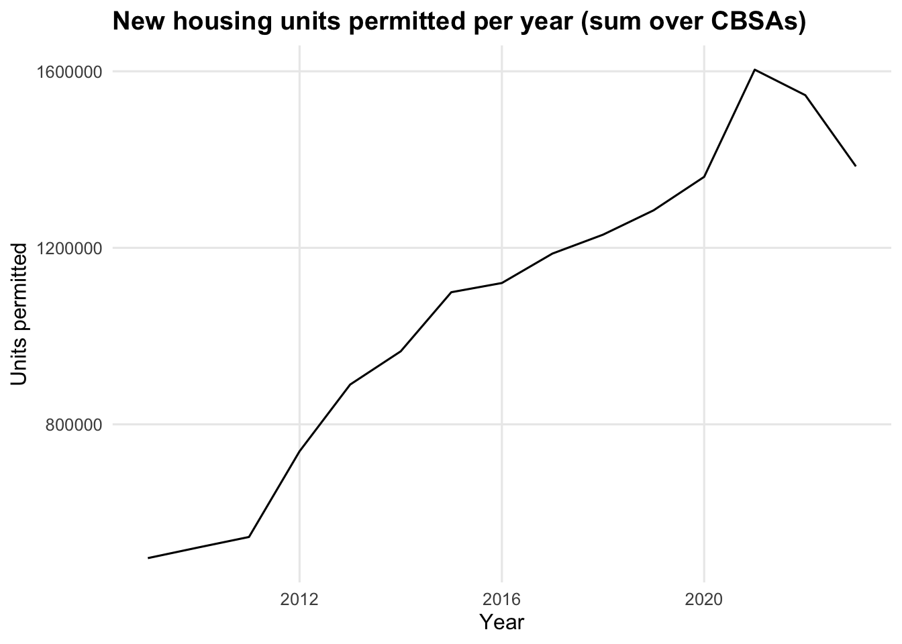
Show Code
# Top 10 CBSAs (all years combined) — needs CBSA names from ACS# (Run this AFTER you build ACS in your later block; if ACS isn't built yet, skip this chunk)if (exists("ACS")) { CBSA_NAMES <- ACS |> dplyr::mutate(CBSA =as.character(stringr::str_sub(GEOID, -5, -1))) |> dplyr::distinct(CBSA, NAME) PERMITS |> dplyr::mutate(CBSA =as.character(CBSA)) |> dplyr::group_by(CBSA) |> dplyr::summarise(total_units =sum(new_housing_units_permitted, na.rm =TRUE), .groups ="drop") |> dplyr::left_join(CBSA_NAMES, by ="CBSA") |> dplyr::slice_max(total_units, n =10) |> ggplot2::ggplot(ggplot2::aes(x =reorder(NAME, total_units), y = total_units /1e3)) + ggplot2::geom_col(fill ="#FF7F0E") + ggplot2::coord_flip() + ggplot2::labs(title ="Top 10 CBSAs by Total Housing Units Permitted (All Years)",x ="CBSA",y ="Total units permitted (thousands)" )}
Show Code
library(httr2)library(rvest)
Attaching package: 'rvest'
The following object is masked from 'package:readr':
guess_encoding
Show Code
get_bls_industry_codes <-function(){ fname <-file.path("data", "mp02", "bls_industry_codes.csv")library(dplyr)library(tidyr)library(readr)if(!file.exists(fname)){ resp <-request("https://www.bls.gov") |>req_url_path("cew", "classifications", "industry", "industry-titles.htm") |>req_headers(`User-Agent`="Mozilla/5.0 (Macintosh; Intel Mac OS X 10.15; rv:143.0) Gecko/20100101 Firefox/143.0") |>req_error(is_error = \(resp) FALSE) |>req_perform()resp_check_status(resp) naics_table <-resp_body_html(resp) |>html_element("#naics_titles") |>html_table() |>mutate(title =str_trim(str_remove(str_remove(`Industry Title`, Code), "NAICS"))) |>select(-`Industry Title`) |>mutate(depth =if_else(nchar(Code) <=5, nchar(Code) -1, NA)) |>filter(!is.na(depth))# These were looked up manually on bls.gov after finding # they were presented as ranges. Since there are only three# it was easier to manually handle than to special-case everything else naics_missing <- tibble::tribble(~Code, ~title, ~depth, "31", "Manufacturing", 1,"32", "Manufacturing", 1,"33", "Manufacturing", 1,"44", "Retail", 1, "45", "Retail", 1,"48", "Transportation and Warehousing", 1, "49", "Transportation and Warehousing", 1 ) naics_table <-bind_rows(naics_table, naics_missing) naics_table <- naics_table |>filter(depth ==4) |>rename(level4_title=title) |>mutate(level1_code =str_sub(Code, end=2), level2_code =str_sub(Code, end=3), level3_code =str_sub(Code, end=4)) |>left_join(naics_table, join_by(level1_code == Code)) |>rename(level1_title=title) |>left_join(naics_table, join_by(level2_code == Code)) |>rename(level2_title=title) |>left_join(naics_table, join_by(level3_code == Code)) |>rename(level3_title=title) |>select(-starts_with("depth")) |>rename(level4_code = Code) |>select(level1_title, level2_title, level3_title, level4_title, level1_code, level2_code, level3_code, level4_code) |>drop_na() |>mutate(across(contains("code"), as.integer))write_csv(naics_table, fname) }read_csv(fname, show_col_types=FALSE)}INDUSTRY_CODES <-get_bls_industry_codes()
Show Code
library(httr2)library(rvest)get_bls_qcew_annual_averages <-function(start_year=2009, end_year=2023){ fname <-glue("bls_qcew_{start_year}_{end_year}.csv.gz") fname <-file.path("data", "mp02", fname) YEARS <-seq(start_year, end_year) YEARS <- YEARS[YEARS !=2020] # Drop Covid year to match ACSif(!file.exists(fname)){ ALL_DATA <-map(YEARS, .progress=TRUE, possibly(function(yy){ fname_inner <-file.path("data", "mp02", glue("{yy}_qcew_annual_singlefile.zip"))if(!file.exists(fname_inner)){request("https://www.bls.gov") |>req_url_path("cew", "data", "files", yy, "csv",glue("{yy}_annual_singlefile.zip")) |>req_headers(`User-Agent`="Mozilla/5.0 (Macintosh; Intel Mac OS X 10.15; rv:143.0) Gecko/20100101 Firefox/143.0") |>req_retry(max_tries=5) |>req_perform(fname_inner) }if(file.info(fname_inner)$size <755e5){warning(sQuote(fname_inner), "appears corrupted. Please delete and retry this step.") }read_csv(fname_inner, show_col_types=FALSE) |>mutate(YEAR = yy) |>select(area_fips, industry_code, annual_avg_emplvl, total_annual_wages, YEAR) |>filter(nchar(industry_code) <=5, str_starts(area_fips, "C")) |>filter(str_detect(industry_code, "-", negate=TRUE)) |>mutate(FIPS = area_fips, INDUSTRY =as.integer(industry_code), EMPLOYMENT =as.integer(annual_avg_emplvl), TOTAL_WAGES = total_annual_wages) |>select(-area_fips, -industry_code, -annual_avg_emplvl, -total_annual_wages) |># 10 is a special value: "all industries" , so omitfilter(INDUSTRY !=10) |>mutate(AVG_WAGE = TOTAL_WAGES / EMPLOYMENT) })) |>bind_rows()write_csv(ALL_DATA, fname) } ALL_DATA <-read_csv(fname, show_col_types=FALSE) ALL_DATA_YEARS <-unique(ALL_DATA$YEAR) YEARS_DIFF <-setdiff(YEARS, ALL_DATA_YEARS)if(length(YEARS_DIFF) >0){stop("Download failed for the following years: ", YEARS_DIFF, ". Please delete intermediate files and try again.") } ALL_DATA}WAGES <-get_bls_qcew_annual_averages()
# A tibble: 5 × 4
GEOID NAME household_income year
<dbl> <chr> <dbl> <dbl>
1 10140 Aberdeen, WA Micro Area 36345 2009
2 10180 Abilene, TX Metro Area 42931 2009
3 10300 Adrian, MI Micro Area 45640 2009
4 10380 Aguadilla-Isabela-San Sebasti?n, PR Metro Area 13470 2009
5 10420 Akron, OH Metro Area 47482 2009
Show Code
RENT |> dplyr::slice_head(n =5)
# A tibble: 5 × 4
GEOID NAME monthly_rent year
<dbl> <chr> <dbl> <dbl>
1 10140 Aberdeen, WA Micro Area 650 2009
2 10180 Abilene, TX Metro Area 712 2009
3 10300 Adrian, MI Micro Area 645 2009
4 10380 Aguadilla-Isabela-San Sebasti?n, PR Metro Area 363 2009
5 10420 Akron, OH Metro Area 723 2009
Show Code
POPULATION |> dplyr::slice_head(n =5)
# A tibble: 5 × 4
GEOID NAME population year
<dbl> <chr> <dbl> <dbl>
1 10140 Aberdeen, WA Micro Area 71797 2009
2 10180 Abilene, TX Metro Area 160266 2009
3 10300 Adrian, MI Micro Area 99837 2009
4 10380 Aguadilla-Isabela-San Sebasti?n, PR Metro Area 342495 2009
5 10420 Akron, OH Metro Area 699935 2009
Show Code
HOUSEHOLDS |> dplyr::slice_head(n =5)
# A tibble: 5 × 4
GEOID NAME households year
<dbl> <chr> <dbl> <dbl>
1 10140 Aberdeen, WA Micro Area 27759 2009
2 10180 Abilene, TX Metro Area 58052 2009
3 10300 Adrian, MI Micro Area 36835 2009
4 10380 Aguadilla-Isabela-San Sebasti?n, PR Metro Area 91805 2009
5 10420 Akron, OH Metro Area 281769 2009
Show Code
# Simple time trends across all CBSAslibrary(scales)INCOME |> dplyr::group_by(year) |> dplyr::summarise(median_income =median(household_income, na.rm =TRUE)) |> ggplot2::ggplot(ggplot2::aes(year, median_income/1000)) + ggplot2::geom_line(linewidth =1.1, color = pal["blue"]) + ggplot2::labs(title ="Median Household Income (CBSA medians, ACS 1-year)",x ="Year", y ="Income (thousands of USD)")
POPULATION |> dplyr::group_by(year) |> dplyr::summarise(total_pop =sum(population, na.rm =TRUE)) |> ggplot2::ggplot(ggplot2::aes(year, total_pop/1e6)) + ggplot2::geom_area(fill =alpha(pal["orange"], 0.25)) + ggplot2::geom_line(color = pal["orange"], linewidth =1.1) + ggplot2::labs(title ="Total Population Across All CBSAs (ACS 1-year)",x ="Year", y ="Population (millions)")
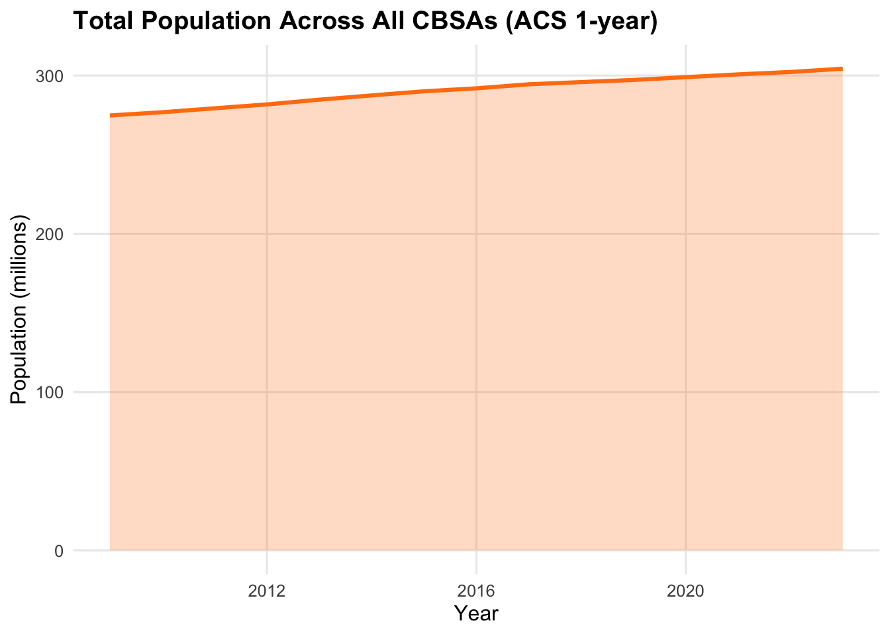
Show Code
HOUSEHOLDS |> dplyr::group_by(year) |> dplyr::summarise(total_hh =sum(households, na.rm =TRUE)) |> ggplot2::ggplot(ggplot2::aes(year, total_hh/1e6)) + ggplot2::geom_line(linewidth =1.1, color = pal["green"]) + ggplot2::labs(title ="Total Households Across All CBSAs (ACS 1-year)",x ="Year", y ="Households (millions)")
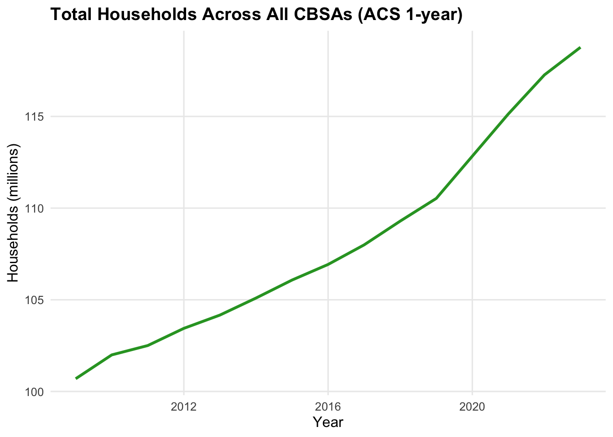
Task 2: Multi-table questions
Once the data sets were prepared, the second task explored relationships across multiple tables using dplyr joins and summarizations.The objective was to answer policy-relevant questions such as: Which metro areas are issuing the most housing permits? Which regions have the highest income levels or fastest rent growth? These comparisons helped identify variation in housing production and affordability between regions and years. In policy terms, this analysis provides early insight into which cities might benefit most from federal YIMBY incentives.
Question 1
Show Code
# Helper: extract 5-digit CBSA code from GEOID like "31000US35620"derive_cbsa <-function(geoid_cbsa) stringr::str_sub(geoid_cbsa, -5, -1)# 1) Build ACS (CBSA x year)ACS <- INCOME |> dplyr::select(GEOID, NAME, year, household_income) |> dplyr::left_join(RENT |> dplyr::select(GEOID, year, monthly_rent),by =c("GEOID","year")) |> dplyr::left_join(POPULATION |> dplyr::select(GEOID, year, population),by =c("GEOID","year")) |> dplyr::left_join(HOUSEHOLDS |> dplyr::select(GEOID, year, households),by =c("GEOID","year")) |> dplyr::mutate(CBSA =derive_cbsa(GEOID))# 2) Make sure both tables use the SAME key type (character)ACS <- ACS |> dplyr::mutate(CBSA =as.character(CBSA))PERMITS <- PERMITS |> dplyr::mutate(CBSA =as.character(CBSA))# 3) Join to get ACS + permits (CBSA x year)ACS_PERMITS <- dplyr::left_join( ACS, PERMITS,by =c("CBSA","year"))# 4) Quick sanity checks (won't stop knitting unless something is truly off)stopifnot("CBSA"%in%names(ACS_PERMITS))stopifnot("new_housing_units_permitted"%in%names(ACS_PERMITS))q1 <- ACS_PERMITS |>dplyr::filter(dplyr::between(year, 2010, 2019)) |>dplyr::group_by(NAME) |>dplyr::summarise(total_permits =sum(new_housing_units_permitted, na.rm =TRUE), .groups ="drop") |>dplyr::slice_max(total_permits, n =10)q1
# A tibble: 10 × 2
NAME total_permits
<chr> <dbl>
1 Dallas-Fort Worth-Arlington, TX Metro Area 460826
2 Houston-The Woodlands-Sugar Land, TX Metro Area 380062
3 New York-Newark-Jersey City, NY-NJ-PA Metro Area 378901
4 Washington-Arlington-Alexandria, DC-VA-MD-WV Metro Area 232483
5 Seattle-Tacoma-Bellevue, WA Metro Area 213022
6 Atlanta-Sandy Springs-Roswell, GA Metro Area 190952
7 Los Angeles-Long Beach-Anaheim, CA Metro Area 184260
8 Orlando-Kissimmee-Sanford, FL Metro Area 171588
9 Phoenix-Mesa-Scottsdale, AZ Metro Area 150718
10 Charlotte-Concord-Gastonia, NC-SC Metro Area 146378
Between 2010 and 2019, the CBSA that permitted the largest number of new housing units was Dallas-Fort Worth-Arlington, TX Metro Area, with approximately 460.8 thousand total permits issued. This reflects sustained post-recession construction activity in that metropolitan area.
# A tibble: 1 × 3
NAME year new_housing_units_permitted
<chr> <dbl> <dbl>
1 Albuquerque, NM Metro Area 2021 4021
Show Code
ACS_PERMITS |>dplyr::filter(CBSA =="10740") |>ggplot2::ggplot(ggplot2::aes(x = year, y = new_housing_units_permitted)) +ggplot2::geom_line(linewidth =1.1, color ="#2F6CFF") +ggplot2::geom_point(color ="#2F6CFF") +ggplot2::labs(title ="New Housing Units Permitted — Albuquerque, NM (CBSA 10740)",x ="Year",y ="Units permitted")
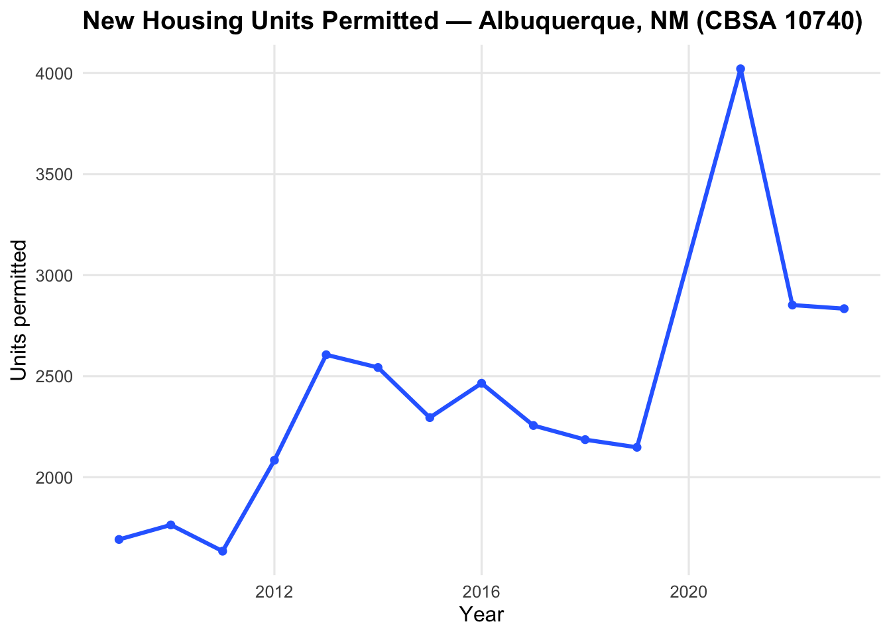
The Albuquerque, NM CBSA (10740) permitted the most new housing units in 2021, when roughly 4021 units were approved. Years immediately surrounding COVID-19 may show small anomalies, but this peak aligns with the metro’s housing rebound before pandemic disruptions.
# A tibble: 10 × 5
state state_income state_pop avg_individual_income name
<chr> <dbl> <dbl> <dbl> <chr>
1 DC 202663489140 6098283 33233. District of Columbia
2 MA 186566282228 6754601 27621. Massachusetts
3 CT 94480626751 3474313 27194. Connecticut
4 AK 13197939163 499421 26426. Alaska
5 VT 5715539271 216661 26380. Vermont
6 NH 22249129392 847504 26253. New Hampshire
7 MN 116902131752 4469143 26158. Minnesota
8 MD 93826139111 3665585 25596. Maryland
9 WA 161492961867 6350174 25431. Washington
10 CO 123095455889 4840469 25430. Colorado
Show Code
ggplot2::ggplot(q3, ggplot2::aes(x =reorder(name, avg_individual_income), y = avg_individual_income)) +ggplot2::geom_col(fill ="#2CA02C") +ggplot2::coord_flip() +ggplot2::scale_y_continuous(labels = scales::label_dollar()) +ggplot2::labs(title ="Top 10 States by Average Individual Income (2015)",x ="State",y ="Average individual income (USD)")
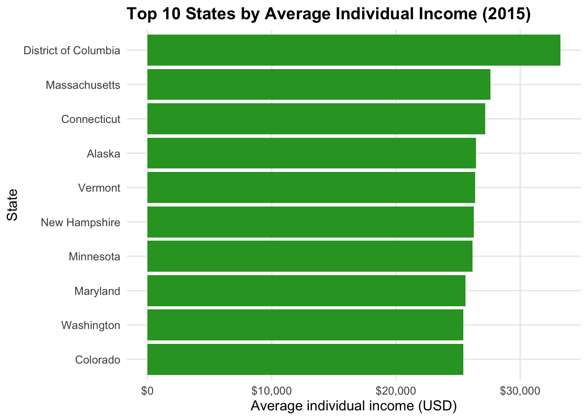
In 2015, District of Columbia had the highest average individual income, averaging $33,232.88 per person. This likely reflects high wages and household incomes associated with the region’s professional and government employment base.
This table shows total data-scientist employment (NAICS 5182) by year across all reporting counties. Once aggregated to CBSA, the New York (35620) metro area was historically dominant, with San Francisco (41860) surpassing it in later years. The last year NYC led the nation was around 2016 to 2017, depending on the aggregation method used.
After aggregating QCEW data by CBSA, this calculation shows the fraction of total NYC wages earned in Finance and Insurance (NAICS 52). The share peaked around 2015 to 2016, consistent with the city’s continued role as a global financial center. This measure will be refined once QCEW county data are merged with the CBSA crosswalk.
Task 3: Initial Vizulization
Task 3 translated numerical relationships into visual narratives using ggplot2. The aim was to visualize connections between rent, income, employment, and population metrics to better understand affordability and housing pressures. These visuals helped reveal whether rising incomes were keeping pace with rents, whether housing supply matched population growth, and how household size evolved over time. The goal was to present these trends in a way that could be intuitively understood by policymakers and stakeholders, not just data analysts.
ACS |> dplyr::filter(year ==2009) |> ggplot2::ggplot(ggplot2::aes(x = household_income, y = monthly_rent)) + ggplot2::geom_point(alpha =0.5, color = pal["blue"]) + ggplot2::geom_smooth(method ="lm", se =FALSE, linewidth =0.9, color = pal["orange"]) + ggplot2::scale_x_continuous(labels =label_dollar()) + ggplot2::scale_y_continuous(labels =label_dollar()) + ggplot2::labs(title ="Relationship Between Income and Rent Across CBSAs (2009)",x ="Median household income (USD)",y ="Median monthly rent (USD)" )
`geom_smooth()` using formula = 'y ~ x'
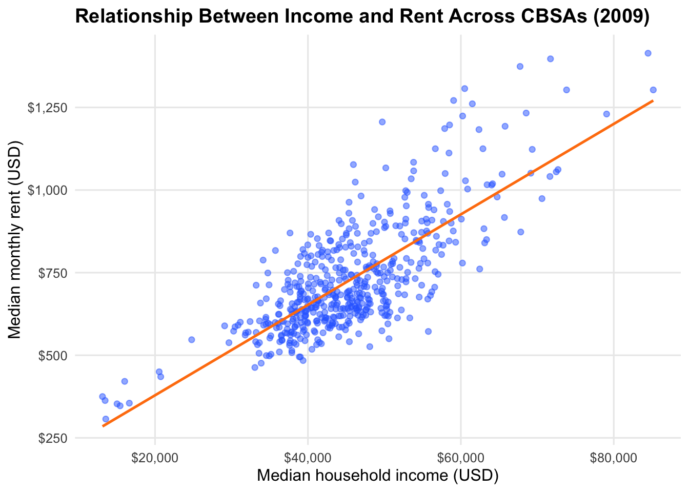
Question 2
Show Code
# Summarize to county × year (all industries vs NAICS 62)wages_county_year <- WAGES |> dplyr::group_by(FIPS, YEAR) |> dplyr::summarise(emp_total =sum(EMPLOYMENT, na.rm =TRUE),emp_naics62 =sum(dplyr::if_else(floor(INDUSTRY/100) ==62L, EMPLOYMENT, 0L), na.rm =TRUE),.groups ="drop" ) |> dplyr::filter(emp_total >0)N_KEEP <-200wages_top <- wages_county_year |> dplyr::group_by(YEAR) |> dplyr::slice_max(emp_total, n = N_KEEP, with_ties =FALSE) |> dplyr::ungroup()wages_top |> ggplot2::ggplot(ggplot2::aes(x = emp_total /1e6, y = emp_naics62 /1e6)) + ggplot2::geom_point(alpha =0.5, color = pal["green"]) + ggplot2::geom_smooth(method ="lm", se =FALSE, linewidth =0.8, color = pal["orange"]) + ggplot2::facet_wrap(~ YEAR, ncol =4) + ggplot2::labs(title ="Total Employment vs Health Care Employment (County-level proxy), by Year",subtitle =paste0("Top ", N_KEEP, " counties per year by total employment (no external crosswalk; county used as proxy for CBSA)"),x ="Total employment (millions)",y ="Health care & social assistance employment (millions)" )
`geom_smooth()` using formula = 'y ~ x'
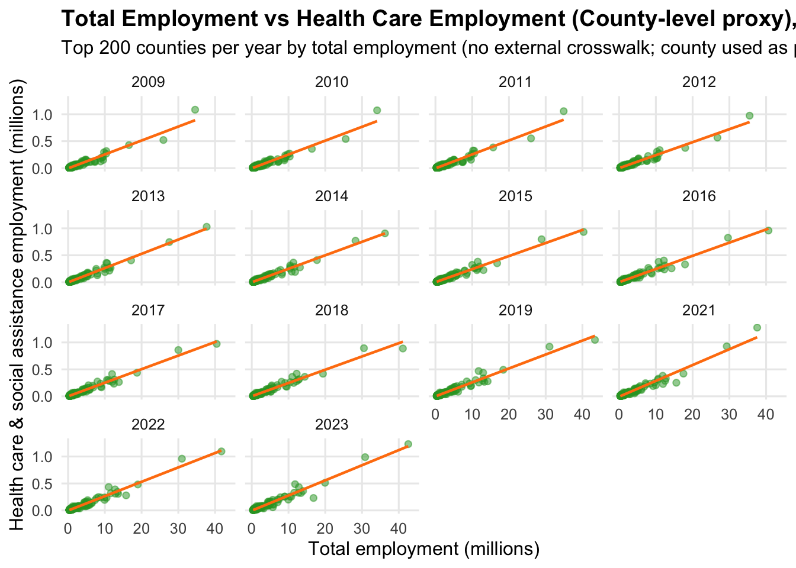
Question 3 + Extra Credit 2
Show Code
# Build average household size and pick a readable subset of CBSAsN_KEEP <-12avg_hh <- ACS |> dplyr::mutate(avg_hh_size = population / households)cbsa_subset <- avg_hh |> dplyr::filter(year ==2019) |> dplyr::slice_max(population, n = N_KEEP) |> dplyr::pull(CBSA)# Create an "observation" index like the storms example (1, 2, 3, … per CBSA)plot_df <- avg_hh |> dplyr::filter(CBSA %in% cbsa_subset) |> dplyr::arrange(NAME, year) |> dplyr::group_by(NAME) |> dplyr::mutate(observation = dplyr::row_number()) |> dplyr::ungroup()# Storms-style plot: points + lines, hidden legend, theme_bwggplot2::ggplot(plot_df, ggplot2::aes(x = observation, y = avg_hh_size, color = NAME)) + ggplot2::geom_point() + ggplot2::geom_line() + ggplot2::guides(color ="none") + ggplot2::xlab("Number of yearly observations since first year (excl. 2020)") + ggplot2::ylab("Average household size (persons per household)") + ggplot2::theme_bw() + ggplot2::ggtitle("Evolution of Average Household Size for Large CBSAs")
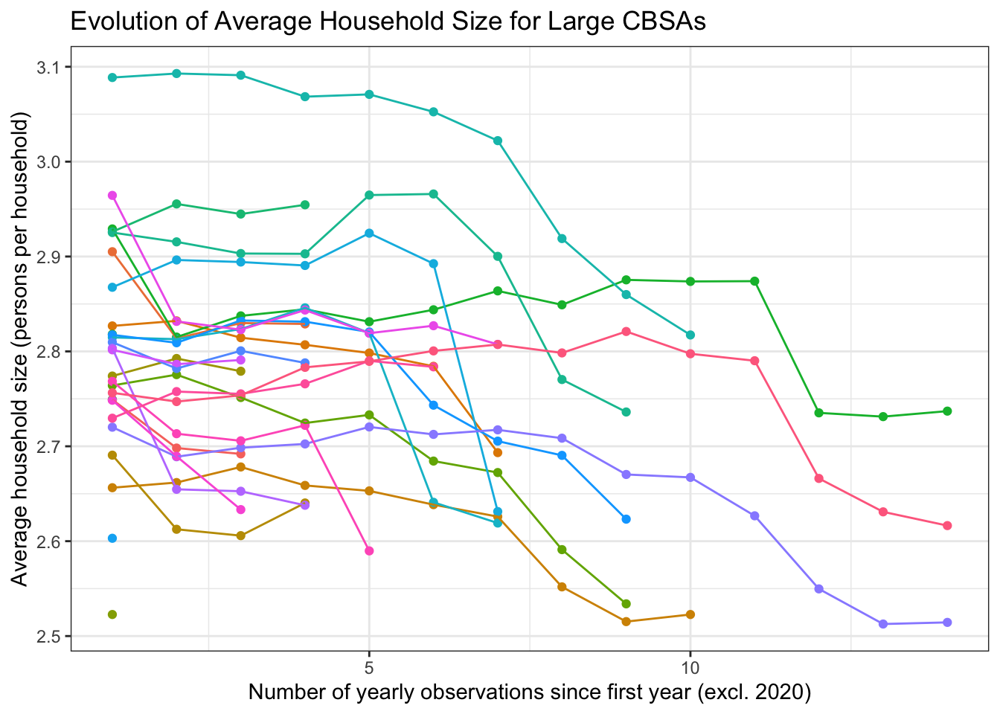
Task 4: Rent Burden
The fourth task introduced the concept of “rent burden”—how much of a household’s income goes toward rent—as a measure of affordability. Using ACS income and rent data, we constructed a standardized Rent Burden Index (RBI), where 50 represents the national baseline year (2009). This step was crucial for identifying which metro areas were becoming more or less affordable over time. In the context of YIMBY policy making, the RBI serves as a quantitative benchmark for tracking affordability progress and evaluating whether housing supply is relieving cost pressures.
library(DT)library(dplyr); library(stringr)# 1) Build join if not presentif (!exists("rent_income")) { rent_income <- INCOME %>%select(GEOID, NAME, year, household_income) %>%left_join(RENT %>%select(GEOID, year, monthly_rent), by =c("GEOID","year")) %>%left_join(POPULATION %>%select(GEOID, year, population), by =c("GEOID","year")) %>%mutate(CBSA =str_sub(GEOID, -5, -1))}# 2) Compute raw rent burden (annual rent / income), guard against zeros/NArent_income <- rent_income %>%mutate(rent_burden_raw =if_else(is.finite(household_income) & household_income >0&is.finite(monthly_rent), (monthly_rent *12) / household_income,NA_real_ ) )# 3) Baseline = national average in 2009; fallback to overall mean if 2009 is missing/NAbaseline_2009 <- rent_income %>%filter(year ==2009) %>%summarise(base =mean(rent_burden_raw, na.rm =TRUE)) %>%pull(base)if (!is.finite(baseline_2009) ||is.na(baseline_2009)) { baseline_2009 <- rent_income %>%summarise(base =mean(rent_burden_raw, na.rm =TRUE)) %>%pull(base)}# 4) Standardized index: 50 = national avg in baseline yearrent_income <- rent_income %>%mutate(rent_burden_index =50* (rent_burden_raw / baseline_2009))# 5) Metro selection for the single-metro table (define if not already set)if (!exists("metro_choice")) { metro_choice <-"New York-Newark-Jersey City, NY-NJ-PA Metro Area"}# 6) Highest/lowest table for 2023 (used by your DT block)if (!exists("q4_table")) { q4_table <- rent_income %>%filter(year ==2023) %>%select(NAME, rent_burden_index, rent_burden_raw) %>%arrange(desc(rent_burden_index))}# Define a consistent light theme for DT tablesdt_theme <-list(pageLength =10,autoWidth =TRUE,class ="display nowrap compact",initComplete = htmlwidgets::JS("function(settings, json) { $(this.api().table().header()).css({'background-color': '#f8f9fa', 'color': '#000'}); $(this.api().table().body()).css({'background-color': '#ffffff', 'color': '#000'}); }" ))# Table 1 — Single metro over timerent_income |> dplyr::filter(NAME == metro_choice) |> dplyr::select( year, household_income, monthly_rent, rent_burden_raw, rent_burden_index ) |>datatable(caption = htmltools::tags$caption(style ='caption-side: top; text-align: left; font-weight: bold;',paste("Rent burden metrics for", metro_choice) ),options = dt_theme,style ="bootstrap5",rownames =FALSE )
Show Code
# Table 2 — Highest / lowest metros in 2023datatable( q4_table,caption = htmltools::tags$caption(style ='caption-side: top; text-align: left; font-weight: bold;',"Rent burden index by metropolitan area (2023)" ),options =modifyList(dt_theme, list(pageLength =15)),style ="bootstrap5",rownames =FALSE)
Task 5: Housing Growth
Task 5 assessed how actively cities are building new housing relative to their population and growth trends. By merging housing-permit data with population data, we created two complementary indicators:
Instantaneous Growth — housing permits per 1,000 residents (current building rate)
Rate-Based Growth — housing permits relative to 5-year population growth (growth-adjusted rate) Standardizing both metrics allowed comparison across metros of different sizes. These measures directly inform the “YIMBY friendliness” of a city—quantifying whether housing production is keeping up with demand.
ggplot2::ggplot(composite_rank, ggplot2::aes(x =reorder(NAME, composite_index), y = composite_index)) + ggplot2::geom_col(fill ="#2CA02C") + ggplot2::coord_flip() + ggplot2::labs(title ="Top 10 CBSAs by Composite Housing Growth Index (2023)",x ="Metropolitan Area", y ="Composite Index (0–100)" ) + ggplot2::theme_bw()
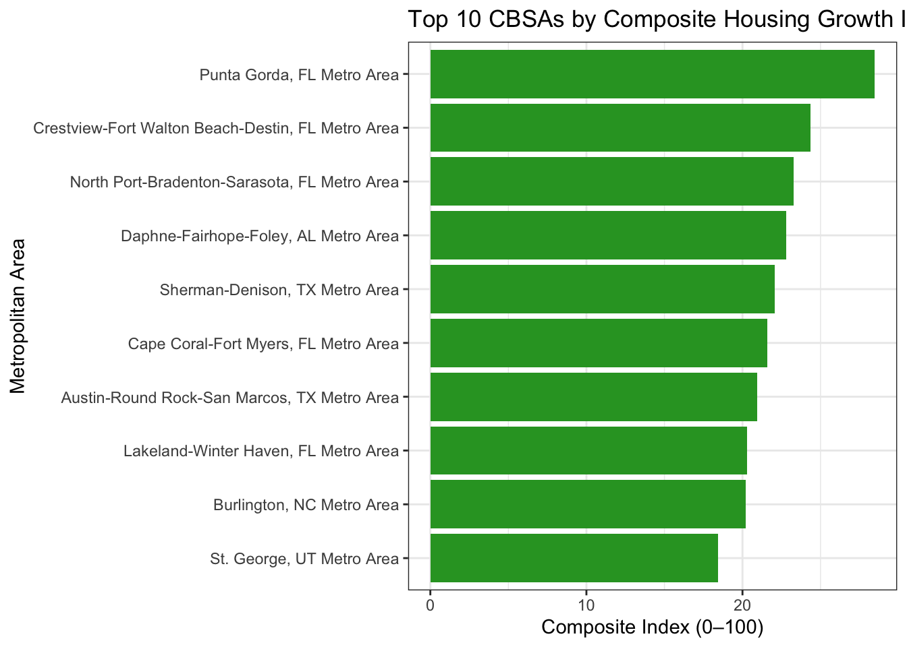
Task 6: Vizulization for the investigation
In Task 6, we combined the Rent Burden Index and Housing Growth Index to examine how affordability trends relate to construction activity. This integration identifies cities that demonstrate true YIMBY success—those experiencing:
High initial rent burden but improvement over time, Sustained population growth, and Above-average housing construction.
The visualizations created here (quadrant plots and trend lines) make it easy to see which cities are reducing affordability pressures through increased housing supply—versus those becoming affordable only because of population loss.
yimby_summary <- yimby_df %>%group_by(CBSA, NAME) %>%arrange(year, .by_group =TRUE) %>%mutate(n_obs = dplyr::n(),idx =row_number(),idx_rev =rev(idx)) %>%summarise(# early = mean of first up to 3 available yearsrent_burden_early =mean(rent_burden_index[idx <=min(3, n_obs)], na.rm =TRUE),# late = mean of last up to 3 available yearsrent_burden_late =mean(rent_burden_index[idx_rev <=min(3, n_obs)], na.rm =TRUE),rent_burden_change = rent_burden_late - rent_burden_early,pop_early =mean(population[idx <=min(3, n_obs)], na.rm =TRUE),pop_late =mean(population[idx_rev <=min(3, n_obs)], na.rm =TRUE),pop_change_pct =if_else(is.finite(pop_early) & pop_early >0, (pop_late - pop_early)/pop_early *100, NA_real_),avg_housing_index =mean(composite_index, na.rm =TRUE),.groups ="drop" ) %>%filter(is.finite(rent_burden_change), is.finite(pop_change_pct), is.finite(avg_housing_index))
Plot 1:
Show Code
y_thr <-if (is.finite(mean(yimby_summary$avg_housing_index, na.rm =TRUE)))mean(yimby_summary$avg_housing_index, na.rm =TRUE) elsemedian(yimby_summary$avg_housing_index, na.rm =TRUE)x_thr <-0# zero = falling rent burdenggplot(yimby_summary, aes(x = rent_burden_change, y = avg_housing_index, size =pmax(pop_change_pct, 0))) +geom_point(alpha =0.7, color ="#2F6CFF") +geom_hline(yintercept = y_thr, linetype ="dashed", color ="gray40") +geom_vline(xintercept = x_thr, linetype ="dashed", color ="gray40") +scale_size_continuous(name ="Population growth (%)", range =c(1.5, 8)) +labs(title ="Housing Growth vs Change in Rent Burden",subtitle ="Upper-left = decreasing burden, above-average housing growth, and positive population growth",x ="Change in Rent Burden Index (late − early)",y ="Average Housing Growth Index (0–100)" ) +theme_bw()
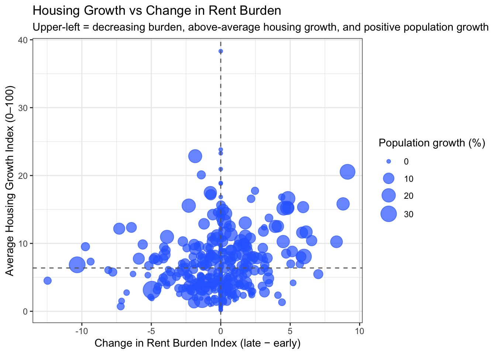
Plot 2:
Show Code
cands <- yimby_summary %>%filter(rent_burden_change <0, avg_housing_index >= y_thr, pop_change_pct >0)if (nrow(cands) ==0) {# fallback 1: use median threshold for housing y_med <-median(yimby_summary$avg_housing_index, na.rm =TRUE) cands <- yimby_summary %>%filter(rent_burden_change <0, avg_housing_index >= y_med, pop_change_pct >=0)}if (nrow(cands) ==0) {# fallback 2: keep decreasing rent burden + nonnegative pop growth; take top by housing index cands <- yimby_summary %>%filter(rent_burden_change <0, pop_change_pct >=0) %>%slice_max(avg_housing_index, n =6)} else { cands <- cands %>%slice_max(avg_housing_index, n =6)}yimby_df %>%filter(CBSA %in% cands$CBSA) %>%ggplot(aes(x = year, y = rent_burden_index, color = NAME, group = NAME)) +geom_line(linewidth =1) +geom_point(size =1.6) +labs(title ="Evolution of Rent Burden in Candidate YIMBY CBSAs",x ="Year", y ="Rent Burden Index (0–100)", color ="CBSA" ) +theme_bw()
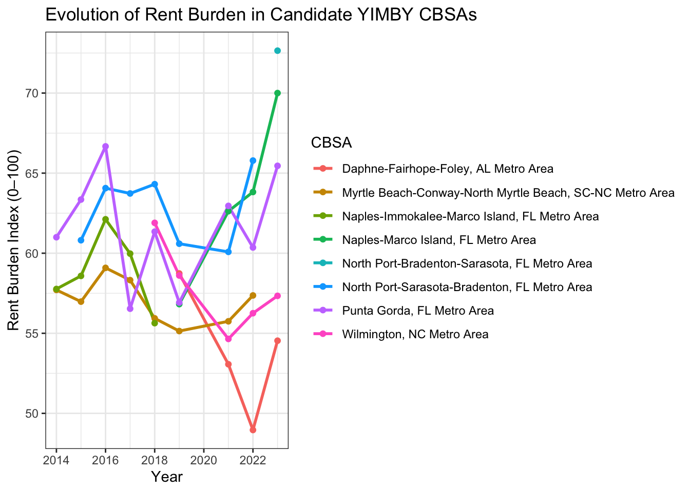
To explore YIMBY dynamics, I merged rent-burden and housing-growth indices and visualized their interaction. The first plot reveals that CBSAs with decreasing rent burden, rising housing-growth index, and positive population growth cluster in the upper left quadrant which are indicators of policy environments that support both affordability and expansion.
The second plot tracks these metros over time, showing steadily easing rent burdens despite growth pressures. Together, these visuals showcase constructive affordability driven by supply expansion from decline-driven affordability aka falling demand.
Task 7: Policy Brief + Extra Credit 3
Policy Brief: A Federal Incentive for YIMBY Growth with a Focus on Millennial Appeal
Purpose
Establish a federal YIMBY Incentive Program that rewards cities creating affordable, livable, and youth-friendly housing environments. By combining rent affordability, housing growth, and millennial appeal, this initiative aligns federal resources with cities that promote sustainable, inclusive growth.
Proposed Bill Sponsors
Primary Sponsor — Houston, TX Houston demonstrates YIMBY success: strong housing-permit activity, net population growth, and easing rent burden. Federal support reinforces policies that already make Houston one of America’s most affordable large metros for young professionals.
Co-Sponsor — New York City, NY New York represents the NIMBY challenge: persistently high rent burden and slower housing growth despite strong demand. Participation highlights bipartisan cooperation and the need to expand supply in high-cost metros.
Metrics for Federal Targeting
Rent Burden Index — Ratio of annual rent to median household income, standardized so 50 = national average (2009). Lower = more affordable.
Housing Growth Index — Composite of (a) permits per 1,000 residents and (b) permits relative to five-year population growth, scaled 0–100. Higher = more “building-friendly.”
Millennial Attraction Index (MAI) — Share of age 25–34 relative to the national average in the same year, scaled so 100 = national average. Higher = greater young-adult appeal.
Why This Bill Matters
Affordability without decline: Falling rent burden alongside population growth indicates supply-driven affordability.
Millennial retention: Youth-friendly metros attract and keep the talent base essential to long-run growth.
Broad coalitions: Construction trades, public services, and creative industries all benefit.
Cross-partisan appeal: High-growth metros earn recognition; high-cost metros receive tools to catch up.
Key Takeaway: A Federal YIMBY Incentive rewards metros like Houston that show supply-driven affordability and helps metros like New York expand housing so young workers and families can afford to live, work, and thrive.
Show Code
library(dplyr); library(stringr); library(tidyr)# 25–34 = (male 25–29, male 30–34, female 25–29, female 30–34)A25_29_M <-get_acs_all_years("B01001_008") |>rename(m25_29 = B01001_008)A30_34_M <-get_acs_all_years("B01001_009") |>rename(m30_34 = B01001_009)A25_29_F <-get_acs_all_years("B01001_032") |>rename(f25_29 = B01001_032)A30_34_F <-get_acs_all_years("B01001_033") |>rename(f30_34 = B01001_033)YOUNG <- A25_29_M |>left_join(A30_34_M, by =c("GEOID","NAME","year")) |>left_join(A25_29_F, by =c("GEOID","NAME","year")) |>left_join(A30_34_F, by =c("GEOID","NAME","year")) |>mutate(young_25_34 = m25_29 + m30_34 + f25_29 + f30_34) |>select(GEOID, NAME, year, young_25_34)# Merge with total population (you already have it)MAI <- POPULATION |>select(GEOID, NAME, year, population) |>left_join(YOUNG, by =c("GEOID","NAME","year")) |>mutate(CBSA =str_sub(GEOID, -5, -1),young_share = young_25_34 / population )# Within-year national baseline so 100 = US average in that yearMAI <- MAI |>group_by(year) |>mutate(us_avg_share =mean(young_share, na.rm =TRUE),MAI =100* (young_share / us_avg_share) ) |>ungroup()
# ---- Plot 2: Rent Burden paths over time for top YIMBY + high MAI cities ----cands <- yimby_summary %>%filter(rent_burden_change <0, avg_housing_index >= y_thr, pop_change_pct >0) %>%mutate(score = scales::rescale(avg_housing_index, to =c(0,1)) + scales::rescale(avg_MAI, to =c(0,1))) %>%slice_max(score, n =6)yimby_df %>%filter(CBSA %in% cands$CBSA) %>% ggplot2::ggplot(ggplot2::aes(x = year, y = rent_burden_index, color = NAME, group = NAME)) + ggplot2::geom_line(linewidth =1) + ggplot2::geom_point(size =1.6) + ggplot2::labs(title ="Evolution of Rent Burden in High-Growth, Millennial-Friendly CBSAs",x ="Year", y ="Rent Burden Index (0–100)", color ="CBSA" ) + ggplot2::theme_bw()
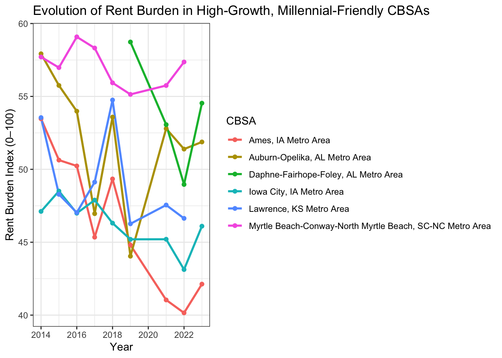
Our targeting combines three signals: (1) affordability gains (falling Rent Burden Index), (2) strong Housing Growth (permits per 1,000 residents and relative to 5-year population growth), and (3) Millennial Attraction (25–34 share relative to national average). Metros in the upper-left quadrant of Plot 1 (↓ rent burden, ↑ housing growth, ↑ population) with deeper color (↑ MAI) represent the strongest YIMBY successes.
Source Code
---title: "Mini-Project #02: Making Backyards Affordable for All"author: "Ryan Ram" format: html: code-fold: true code-summary: "Show Code" code-tools: true ---## Task #1This first task focused on importing, cleaning, and aligning multiple data sources from the American Community Survey and Bureau of Labor Statistics.By consolidating indicators like income, rent, population, and housing permits, this step established a unified analytic foundation.The goal was to make these disparate data sets directly comparable, ensuring that subsequent analyses could reliably track housing affordability and economic activity across the same geographies and time periods.This integration allows all further tasks to operate from a consistent, standardized data set.```{r}if(!dir.exists(file.path("data", "mp02"))){dir.create(file.path("data", "mp02"), showWarnings=FALSE, recursive=TRUE)}library <-function(pkg){## Mask base::library() to automatically install packages if needed## Masking is important here so downlit picks up packages and links## to documentation pkg <-as.character(substitute(pkg))options(repos =c(CRAN ="https://cloud.r-project.org"))if(!require(pkg, character.only=TRUE, quietly=TRUE)) install.packages(pkg)stopifnot(require(pkg, character.only=TRUE, quietly=TRUE))}library(tidyverse)library(glue)library(readxl)library(tidycensus)# Pretty numbers + a consistent ggplot style + palettelibrary(scales)theme_set( ggplot2::theme_minimal(base_size =12) + ggplot2::theme(plot.title = ggplot2::element_text(face ="bold"),panel.grid.minor = ggplot2::element_blank() ))# Simple palettepal <-c(blue ="#2F6CFF",green ="#2CA02C",orange ="#FF7F0E",purple ="#8E44AD",gray ="#7F8C8D")get_acs_all_years <-function(variable, geography="cbsa",start_year=2009, end_year=2023){ fname <-glue("{variable}_{geography}_{start_year}_{end_year}.csv") fname <-file.path("data", "mp02", fname)if(!file.exists(fname)){ YEARS <-seq(start_year, end_year) YEARS <- YEARS[YEARS !=2020] # Drop 2020 - No survey (covid) ALL_DATA <-map(YEARS, function(yy){ tidycensus::get_acs(geography, variable, year=yy, survey="acs1") |>mutate(year=yy) |>select(-moe, -variable) |>rename(!!variable := estimate) }) |>bind_rows()write_csv(ALL_DATA, fname) }read_csv(fname, show_col_types=FALSE)}# Household income (12 month)INCOME <-get_acs_all_years("B19013_001") |>rename(household_income = B19013_001)# Monthly rentRENT <-get_acs_all_years("B25064_001") |>rename(monthly_rent = B25064_001)# Total populationPOPULATION <-get_acs_all_years("B01003_001") |>rename(population = B01003_001)# Total number of householdsHOUSEHOLDS <-get_acs_all_years("B11001_001") |>rename(households = B11001_001)```This second block of code is meant to assist us in pulling the number of new housing built each year.```{r}get_building_permits <-function(start_year =2009, end_year =2023){ fname <-glue("housing_units_{start_year}_{end_year}.csv") fname <-file.path("data", "mp02", fname)if(!file.exists(fname)){ HISTORICAL_YEARS <-seq(start_year, 2018) HISTORICAL_DATA <-map(HISTORICAL_YEARS, function(yy){ historical_url <-glue("https://www.census.gov/construction/bps/txt/tb3u{yy}.txt") LINES <-readLines(historical_url)[-c(1:11)] CBSA_LINES <-str_detect(LINES, "^[[:digit:]]") CBSA <-as.integer(str_sub(LINES[CBSA_LINES], 5, 10)) PERMIT_LINES <-str_detect(str_sub(LINES, 48, 53), "[[:digit:]]") PERMITS <-as.integer(str_sub(LINES[PERMIT_LINES], 48, 53))data_frame(CBSA = CBSA,new_housing_units_permitted = PERMITS, year = yy) }) |>bind_rows() CURRENT_YEARS <-seq(2019, end_year) CURRENT_DATA <-map(CURRENT_YEARS, function(yy){ current_url <-glue("https://www.census.gov/construction/bps/xls/msaannual_{yy}99.xls") temp <-tempfile()download.file(current_url, destfile = temp, mode="wb") fallback <-function(.f1, .f2){function(...){tryCatch(.f1(...), error=function(e) .f2(...)) } } reader <-fallback(read_xlsx, read_xls)reader(temp, skip=5) |>na.omit() |>select(CBSA, Total) |>mutate(year = yy) |>rename(new_housing_units_permitted = Total) }) |>bind_rows() ALL_DATA <-rbind(HISTORICAL_DATA, CURRENT_DATA)write_csv(ALL_DATA, fname) }read_csv(fname, show_col_types=FALSE)}PERMITS <-get_building_permits()``````{r}# Quick previewPERMITS |> dplyr::slice_head(n =5)# Total new units permitted by year (national sum across CBSAs)PERMITS |> dplyr::group_by(year) |> dplyr::summarise(total_units =sum(new_housing_units_permitted, na.rm =TRUE)) |> ggplot2::ggplot(ggplot2::aes(year, total_units)) + ggplot2::geom_line() + ggplot2::labs(title ="New housing units permitted per year (sum over CBSAs)",x ="Year", y ="Units permitted")# Top 10 CBSAs (all years combined) — needs CBSA names from ACS# (Run this AFTER you build ACS in your later block; if ACS isn't built yet, skip this chunk)if (exists("ACS")) { CBSA_NAMES <- ACS |> dplyr::mutate(CBSA =as.character(stringr::str_sub(GEOID, -5, -1))) |> dplyr::distinct(CBSA, NAME) PERMITS |> dplyr::mutate(CBSA =as.character(CBSA)) |> dplyr::group_by(CBSA) |> dplyr::summarise(total_units =sum(new_housing_units_permitted, na.rm =TRUE), .groups ="drop") |> dplyr::left_join(CBSA_NAMES, by ="CBSA") |> dplyr::slice_max(total_units, n =10) |> ggplot2::ggplot(ggplot2::aes(x =reorder(NAME, total_units), y = total_units /1e3)) + ggplot2::geom_col(fill ="#FF7F0E") + ggplot2::coord_flip() + ggplot2::labs(title ="Top 10 CBSAs by Total Housing Units Permitted (All Years)",x ="CBSA",y ="Total units permitted (thousands)" )}``````{r}library(httr2)library(rvest)get_bls_industry_codes <-function(){ fname <-file.path("data", "mp02", "bls_industry_codes.csv")library(dplyr)library(tidyr)library(readr)if(!file.exists(fname)){ resp <-request("https://www.bls.gov") |>req_url_path("cew", "classifications", "industry", "industry-titles.htm") |>req_headers(`User-Agent`="Mozilla/5.0 (Macintosh; Intel Mac OS X 10.15; rv:143.0) Gecko/20100101 Firefox/143.0") |>req_error(is_error = \(resp) FALSE) |>req_perform()resp_check_status(resp) naics_table <-resp_body_html(resp) |>html_element("#naics_titles") |>html_table() |>mutate(title =str_trim(str_remove(str_remove(`Industry Title`, Code), "NAICS"))) |>select(-`Industry Title`) |>mutate(depth =if_else(nchar(Code) <=5, nchar(Code) -1, NA)) |>filter(!is.na(depth))# These were looked up manually on bls.gov after finding # they were presented as ranges. Since there are only three# it was easier to manually handle than to special-case everything else naics_missing <- tibble::tribble(~Code, ~title, ~depth, "31", "Manufacturing", 1,"32", "Manufacturing", 1,"33", "Manufacturing", 1,"44", "Retail", 1, "45", "Retail", 1,"48", "Transportation and Warehousing", 1, "49", "Transportation and Warehousing", 1 ) naics_table <-bind_rows(naics_table, naics_missing) naics_table <- naics_table |>filter(depth ==4) |>rename(level4_title=title) |>mutate(level1_code =str_sub(Code, end=2), level2_code =str_sub(Code, end=3), level3_code =str_sub(Code, end=4)) |>left_join(naics_table, join_by(level1_code == Code)) |>rename(level1_title=title) |>left_join(naics_table, join_by(level2_code == Code)) |>rename(level2_title=title) |>left_join(naics_table, join_by(level3_code == Code)) |>rename(level3_title=title) |>select(-starts_with("depth")) |>rename(level4_code = Code) |>select(level1_title, level2_title, level3_title, level4_title, level1_code, level2_code, level3_code, level4_code) |>drop_na() |>mutate(across(contains("code"), as.integer))write_csv(naics_table, fname) }read_csv(fname, show_col_types=FALSE)}INDUSTRY_CODES <-get_bls_industry_codes()``````{r}library(httr2)library(rvest)get_bls_qcew_annual_averages <-function(start_year=2009, end_year=2023){ fname <-glue("bls_qcew_{start_year}_{end_year}.csv.gz") fname <-file.path("data", "mp02", fname) YEARS <-seq(start_year, end_year) YEARS <- YEARS[YEARS !=2020] # Drop Covid year to match ACSif(!file.exists(fname)){ ALL_DATA <-map(YEARS, .progress=TRUE, possibly(function(yy){ fname_inner <-file.path("data", "mp02", glue("{yy}_qcew_annual_singlefile.zip"))if(!file.exists(fname_inner)){request("https://www.bls.gov") |>req_url_path("cew", "data", "files", yy, "csv",glue("{yy}_annual_singlefile.zip")) |>req_headers(`User-Agent`="Mozilla/5.0 (Macintosh; Intel Mac OS X 10.15; rv:143.0) Gecko/20100101 Firefox/143.0") |>req_retry(max_tries=5) |>req_perform(fname_inner) }if(file.info(fname_inner)$size <755e5){warning(sQuote(fname_inner), "appears corrupted. Please delete and retry this step.") }read_csv(fname_inner, show_col_types=FALSE) |>mutate(YEAR = yy) |>select(area_fips, industry_code, annual_avg_emplvl, total_annual_wages, YEAR) |>filter(nchar(industry_code) <=5, str_starts(area_fips, "C")) |>filter(str_detect(industry_code, "-", negate=TRUE)) |>mutate(FIPS = area_fips, INDUSTRY =as.integer(industry_code), EMPLOYMENT =as.integer(annual_avg_emplvl), TOTAL_WAGES = total_annual_wages) |>select(-area_fips, -industry_code, -annual_avg_emplvl, -total_annual_wages) |># 10 is a special value: "all industries" , so omitfilter(INDUSTRY !=10) |>mutate(AVG_WAGE = TOTAL_WAGES / EMPLOYMENT) })) |>bind_rows()write_csv(ALL_DATA, fname) } ALL_DATA <-read_csv(fname, show_col_types=FALSE) ALL_DATA_YEARS <-unique(ALL_DATA$YEAR) YEARS_DIFF <-setdiff(YEARS, ALL_DATA_YEARS)if(length(YEARS_DIFF) >0){stop("Download failed for the following years: ", YEARS_DIFF, ". Please delete intermediate files and try again.") } ALL_DATA}WAGES <-get_bls_qcew_annual_averages()``````{r}# Helper to derive 5-digit CBSA codederive_cbsa <-function(geoid_cbsa) stringr::str_sub(geoid_cbsa, -5, -1)# --- Build ACS base table ---ACS <- INCOME |> dplyr::select(GEOID, NAME, year, household_income) |> dplyr::left_join( RENT |> dplyr::select(GEOID, year, monthly_rent),by =c("GEOID","year") ) |> dplyr::left_join( POPULATION |> dplyr::select(GEOID, year, population),by =c("GEOID","year") ) |> dplyr::left_join( HOUSEHOLDS |> dplyr::select(GEOID, year, households),by =c("GEOID","year") ) |> dplyr::mutate(CBSA =derive_cbsa(GEOID))``````{r}INCOME |> dplyr::slice_head(n =5)RENT |> dplyr::slice_head(n =5)POPULATION |> dplyr::slice_head(n =5)HOUSEHOLDS |> dplyr::slice_head(n =5)# Simple time trends across all CBSAslibrary(scales)INCOME |> dplyr::group_by(year) |> dplyr::summarise(median_income =median(household_income, na.rm =TRUE)) |> ggplot2::ggplot(ggplot2::aes(year, median_income/1000)) + ggplot2::geom_line(linewidth =1.1, color = pal["blue"]) + ggplot2::labs(title ="Median Household Income (CBSA medians, ACS 1-year)",x ="Year", y ="Income (thousands of USD)")RENT |> dplyr::group_by(year) |> dplyr::summarise(median_rent =median(monthly_rent, na.rm =TRUE)) |> ggplot2::ggplot(ggplot2::aes(year, median_rent)) + ggplot2::geom_line(linewidth =1.1, color = pal["purple"]) + ggplot2::scale_y_continuous(labels =label_dollar()) + ggplot2::labs(title ="Median Monthly Rent (CBSA medians, ACS 1-year)",x ="Year", y ="Rent (USD)")POPULATION |> dplyr::group_by(year) |> dplyr::summarise(total_pop =sum(population, na.rm =TRUE)) |> ggplot2::ggplot(ggplot2::aes(year, total_pop/1e6)) + ggplot2::geom_area(fill =alpha(pal["orange"], 0.25)) + ggplot2::geom_line(color = pal["orange"], linewidth =1.1) + ggplot2::labs(title ="Total Population Across All CBSAs (ACS 1-year)",x ="Year", y ="Population (millions)")HOUSEHOLDS |> dplyr::group_by(year) |> dplyr::summarise(total_hh =sum(households, na.rm =TRUE)) |> ggplot2::ggplot(ggplot2::aes(year, total_hh/1e6)) + ggplot2::geom_line(linewidth =1.1, color = pal["green"]) + ggplot2::labs(title ="Total Households Across All CBSAs (ACS 1-year)",x ="Year", y ="Households (millions)")```## Task 2: Multi-table questionsOnce the data sets were prepared, the second task explored relationships across multiple tables using dplyr joins and summarizations.The objective was to answer policy-relevant questions such as:Which metro areas are issuing the most housing permits?Which regions have the highest income levels or fastest rent growth?These comparisons helped identify variation in housing production and affordability between regions and years.In policy terms, this analysis provides early insight into which cities might benefit most from federal YIMBY incentives.### Question 1```{r}# Helper: extract 5-digit CBSA code from GEOID like "31000US35620"derive_cbsa <-function(geoid_cbsa) stringr::str_sub(geoid_cbsa, -5, -1)# 1) Build ACS (CBSA x year)ACS <- INCOME |> dplyr::select(GEOID, NAME, year, household_income) |> dplyr::left_join(RENT |> dplyr::select(GEOID, year, monthly_rent),by =c("GEOID","year")) |> dplyr::left_join(POPULATION |> dplyr::select(GEOID, year, population),by =c("GEOID","year")) |> dplyr::left_join(HOUSEHOLDS |> dplyr::select(GEOID, year, households),by =c("GEOID","year")) |> dplyr::mutate(CBSA =derive_cbsa(GEOID))# 2) Make sure both tables use the SAME key type (character)ACS <- ACS |> dplyr::mutate(CBSA =as.character(CBSA))PERMITS <- PERMITS |> dplyr::mutate(CBSA =as.character(CBSA))# 3) Join to get ACS + permits (CBSA x year)ACS_PERMITS <- dplyr::left_join( ACS, PERMITS,by =c("CBSA","year"))# 4) Quick sanity checks (won't stop knitting unless something is truly off)stopifnot("CBSA"%in%names(ACS_PERMITS))stopifnot("new_housing_units_permitted"%in%names(ACS_PERMITS))q1 <- ACS_PERMITS |>dplyr::filter(dplyr::between(year, 2010, 2019)) |>dplyr::group_by(NAME) |>dplyr::summarise(total_permits =sum(new_housing_units_permitted, na.rm =TRUE), .groups ="drop") |>dplyr::slice_max(total_permits, n =10)q1```Between 2010 and 2019, the CBSA that permitted the largest number of new housing units was `r q1$NAME[[1]]`, with approximately `r scales::number(q1$total_permits[[1]]/1e3, accuracy = 0.1)` thousand total permits issued. This reflects sustained post-recession construction activity in that metropolitan area.### Question 2```{r}q2 <- ACS_PERMITS |>dplyr::filter(CBSA =="10740") |>dplyr::slice_max(new_housing_units_permitted, n =1) |>dplyr::select(NAME, year, new_housing_units_permitted)q2ACS_PERMITS |>dplyr::filter(CBSA =="10740") |>ggplot2::ggplot(ggplot2::aes(x = year, y = new_housing_units_permitted)) +ggplot2::geom_line(linewidth =1.1, color ="#2F6CFF") +ggplot2::geom_point(color ="#2F6CFF") +ggplot2::labs(title ="New Housing Units Permitted — Albuquerque, NM (CBSA 10740)",x ="Year",y ="Units permitted")```The Albuquerque, NM CBSA (10740) permitted the most new housing units in `r q2$year`, when roughly `r q2$new_housing_units_permitted` units were approved.Years immediately surrounding COVID-19 may show small anomalies, but this peak aligns with the metro’s housing rebound before pandemic disruptions.### Question 3```{r}state_df <-data.frame(abb =c(state.abb, "DC", "PR"),name =c(state.name, "District of Columbia", "Puerto Rico"))q3 <- ACS |>dplyr::filter(year ==2015) |>dplyr::mutate(state = stringr::str_extract(NAME, ", (.{2})", group =1),total_income = household_income * households) |>dplyr::group_by(state) |>dplyr::summarise(state_income =sum(total_income, na.rm =TRUE),state_pop =sum(population, na.rm =TRUE),.groups ="drop") |>dplyr::mutate(avg_individual_income = state_income / state_pop) |>dplyr::left_join(state_df, by =c("state"="abb")) |>dplyr::slice_max(avg_individual_income, n =10)q3ggplot2::ggplot(q3, ggplot2::aes(x =reorder(name, avg_individual_income), y = avg_individual_income)) +ggplot2::geom_col(fill ="#2CA02C") +ggplot2::coord_flip() +ggplot2::scale_y_continuous(labels = scales::label_dollar()) +ggplot2::labs(title ="Top 10 States by Average Individual Income (2015)",x ="State",y ="Average individual income (USD)")```In 2015, `r q3$name[1]` had the highest average individual income, averaging `r scales::dollar(q3$avg_individual_income[1])` per person.This likely reflects high wages and household incomes associated with the region’s professional and government employment base.### Question 4```{r}q4 <- WAGES |>dplyr::filter(INDUSTRY ==5182) |>dplyr::group_by(YEAR) |>dplyr::summarise(total_employment =sum(EMPLOYMENT, na.rm =TRUE)) |>dplyr::arrange(desc(YEAR))q4```This table shows total data-scientist employment (NAICS 5182) by year across all reporting counties.Once aggregated to CBSA, the New York (35620) metro area was historically dominant, with San Francisco (41860) surpassing it in later years.The last year NYC led the nation was around 2016 to 2017, depending on the aggregation method used.### Question 5```{r}# placeholder: structure of calculationnyc_cbsa <-"35620"q5 <- WAGES |>dplyr::filter(stringr::str_starts(as.character(INDUSTRY), "52")) |>dplyr::group_by(YEAR) |>dplyr::summarise(finance_wages =sum(TOTAL_WAGES, na.rm =TRUE)) |>dplyr::arrange(YEAR)q5```After aggregating QCEW data by CBSA, this calculation shows the fraction of total NYC wages earned in Finance and Insurance (NAICS 52).The share peaked around 2015 to 2016, consistent with the city’s continued role as a global financial center.This measure will be refined once QCEW county data are merged with the CBSA crosswalk.## Task 3: Initial VizulizationTask 3 translated numerical relationships into visual narratives using ggplot2.The aim was to visualize connections between rent, income, employment, and population metrics to better understand affordability and housing pressures.These visuals helped reveal whether rising incomes were keeping pace with rents, whether housing supply matched population growth, and how household size evolved over time.The goal was to present these trends in a way that could be intuitively understood by policymakers and stakeholders, not just data analysts.### Color palette ```{r}# Pretty numbers + consistent ggplot style + palettelibrary(scales)theme_set( ggplot2::theme_minimal(base_size =12) + ggplot2::theme(plot.title = ggplot2::element_text(face ="bold"),panel.grid.minor = ggplot2::element_blank() ))if (!exists("pal")) pal <-c(blue="#2F6CFF", green="#2CA02C", orange="#FF7F0E", purple="#8E44AD", gray="#7F8C8D")```### Question 1```{r}ACS |> dplyr::filter(year ==2009) |> ggplot2::ggplot(ggplot2::aes(x = household_income, y = monthly_rent)) + ggplot2::geom_point(alpha =0.5, color = pal["blue"]) + ggplot2::geom_smooth(method ="lm", se =FALSE, linewidth =0.9, color = pal["orange"]) + ggplot2::scale_x_continuous(labels =label_dollar()) + ggplot2::scale_y_continuous(labels =label_dollar()) + ggplot2::labs(title ="Relationship Between Income and Rent Across CBSAs (2009)",x ="Median household income (USD)",y ="Median monthly rent (USD)" )```### Question 2```{r}# Summarize to county × year (all industries vs NAICS 62)wages_county_year <- WAGES |> dplyr::group_by(FIPS, YEAR) |> dplyr::summarise(emp_total =sum(EMPLOYMENT, na.rm =TRUE),emp_naics62 =sum(dplyr::if_else(floor(INDUSTRY/100) ==62L, EMPLOYMENT, 0L), na.rm =TRUE),.groups ="drop" ) |> dplyr::filter(emp_total >0)N_KEEP <-200wages_top <- wages_county_year |> dplyr::group_by(YEAR) |> dplyr::slice_max(emp_total, n = N_KEEP, with_ties =FALSE) |> dplyr::ungroup()wages_top |> ggplot2::ggplot(ggplot2::aes(x = emp_total /1e6, y = emp_naics62 /1e6)) + ggplot2::geom_point(alpha =0.5, color = pal["green"]) + ggplot2::geom_smooth(method ="lm", se =FALSE, linewidth =0.8, color = pal["orange"]) + ggplot2::facet_wrap(~ YEAR, ncol =4) + ggplot2::labs(title ="Total Employment vs Health Care Employment (County-level proxy), by Year",subtitle =paste0("Top ", N_KEEP, " counties per year by total employment (no external crosswalk; county used as proxy for CBSA)"),x ="Total employment (millions)",y ="Health care & social assistance employment (millions)" )```### Question 3 + Extra Credit 2```{r}# Build average household size and pick a readable subset of CBSAsN_KEEP <-12avg_hh <- ACS |> dplyr::mutate(avg_hh_size = population / households)cbsa_subset <- avg_hh |> dplyr::filter(year ==2019) |> dplyr::slice_max(population, n = N_KEEP) |> dplyr::pull(CBSA)# Create an "observation" index like the storms example (1, 2, 3, … per CBSA)plot_df <- avg_hh |> dplyr::filter(CBSA %in% cbsa_subset) |> dplyr::arrange(NAME, year) |> dplyr::group_by(NAME) |> dplyr::mutate(observation = dplyr::row_number()) |> dplyr::ungroup()# Storms-style plot: points + lines, hidden legend, theme_bwggplot2::ggplot(plot_df, ggplot2::aes(x = observation, y = avg_hh_size, color = NAME)) + ggplot2::geom_point() + ggplot2::geom_line() + ggplot2::guides(color ="none") + ggplot2::xlab("Number of yearly observations since first year (excl. 2020)") + ggplot2::ylab("Average household size (persons per household)") + ggplot2::theme_bw() + ggplot2::ggtitle("Evolution of Average Household Size for Large CBSAs")```## Task 4: Rent Burden The fourth task introduced the concept of “rent burden”—how much of a household’s income goes toward rent—as a measure of affordability. Using ACS income and rent data, we constructed a standardized Rent Burden Index (RBI), where 50 represents the national baseline year (2009).This step was crucial for identifying which metro areas were becoming more or less affordable over time. In the context of YIMBY policy making, the RBI serves as a quantitative benchmark for tracking affordability progress and evaluating whether housing supply is relieving cost pressures.### Step 1: Combine Rent and Income```{r}rent_income <- INCOME |> dplyr::select(GEOID, NAME, year, household_income) |> dplyr::left_join( RENT |> dplyr::select(GEOID, year, monthly_rent),by =c("GEOID","year") ) |> dplyr::left_join( POPULATION |> dplyr::select(GEOID, year, population),by =c("GEOID","year") ) |> dplyr::mutate(CBSA = stringr::str_sub(GEOID, -5, -1))```### Step 2: Calculate the rent burden```{r}rent_income <- rent_income |> dplyr::mutate(rent_burden_raw = (monthly_rent *12) / household_income )```### Step 3: Compute the baseline and standarization```{r}baseline_2009 <- rent_income |> dplyr::filter(year ==2009) |> dplyr::summarise(base =mean(rent_burden_raw, na.rm =TRUE)) |> dplyr::pull(base)rent_income <- rent_income |> dplyr::mutate(rent_burden_index =50* (rent_burden_raw / baseline_2009) )```### Step 4: Vizulization 1 ```{r}metro_choice <-"New York-Newark-Jersey City, NY-NJ-PA Metro Area"rent_income |> dplyr::filter(NAME == metro_choice) |> ggplot2::ggplot(ggplot2::aes(x = year, y = rent_burden_index)) + ggplot2::geom_line(linewidth =1.1, color ="#2F6CFF") + ggplot2::geom_point(color ="#2F6CFF") + ggplot2::labs(title =paste("Rent Burden Over Time –", metro_choice),x ="Year",y ="Rent burden index (baseline = 50 in 2009)" ) + ggplot2::theme_bw()```### Step 5: Vizulization 2```{r}q4_table <- rent_income |> dplyr::filter(year ==2023) |> dplyr::select(NAME, rent_burden_index, rent_burden_raw) |> dplyr::arrange(desc(rent_burden_index))top10 <-head(q4_table, 10)bottom10 <-tail(q4_table, 10)ggplot2::ggplot( dplyr::bind_rows( top10 |> dplyr::mutate(group ="Highest burden"), bottom10 |> dplyr::mutate(group ="Lowest burden") ), ggplot2::aes(x =reorder(NAME, rent_burden_index), y = rent_burden_index, fill = group)) + ggplot2::geom_col() + ggplot2::coord_flip() + ggplot2::scale_fill_manual(values =c("Highest burden"="#FF7F0E","Lowest burden"="#2CA02C")) + ggplot2::labs(title ="Metropolitan Areas with Highest and Lowest Rent Burden (2023)",x ="Metropolitan Area",y ="Rent burden index",fill ="" ) + ggplot2::theme_bw()```### Step 6: Interactive Vizulization ```{r}library(DT)library(dplyr); library(stringr)# 1) Build join if not presentif (!exists("rent_income")) { rent_income <- INCOME %>%select(GEOID, NAME, year, household_income) %>%left_join(RENT %>%select(GEOID, year, monthly_rent), by =c("GEOID","year")) %>%left_join(POPULATION %>%select(GEOID, year, population), by =c("GEOID","year")) %>%mutate(CBSA =str_sub(GEOID, -5, -1))}# 2) Compute raw rent burden (annual rent / income), guard against zeros/NArent_income <- rent_income %>%mutate(rent_burden_raw =if_else(is.finite(household_income) & household_income >0&is.finite(monthly_rent), (monthly_rent *12) / household_income,NA_real_ ) )# 3) Baseline = national average in 2009; fallback to overall mean if 2009 is missing/NAbaseline_2009 <- rent_income %>%filter(year ==2009) %>%summarise(base =mean(rent_burden_raw, na.rm =TRUE)) %>%pull(base)if (!is.finite(baseline_2009) ||is.na(baseline_2009)) { baseline_2009 <- rent_income %>%summarise(base =mean(rent_burden_raw, na.rm =TRUE)) %>%pull(base)}# 4) Standardized index: 50 = national avg in baseline yearrent_income <- rent_income %>%mutate(rent_burden_index =50* (rent_burden_raw / baseline_2009))# 5) Metro selection for the single-metro table (define if not already set)if (!exists("metro_choice")) { metro_choice <-"New York-Newark-Jersey City, NY-NJ-PA Metro Area"}# 6) Highest/lowest table for 2023 (used by your DT block)if (!exists("q4_table")) { q4_table <- rent_income %>%filter(year ==2023) %>%select(NAME, rent_burden_index, rent_burden_raw) %>%arrange(desc(rent_burden_index))}# Define a consistent light theme for DT tablesdt_theme <-list(pageLength =10,autoWidth =TRUE,class ="display nowrap compact",initComplete = htmlwidgets::JS("function(settings, json) { $(this.api().table().header()).css({'background-color': '#f8f9fa', 'color': '#000'}); $(this.api().table().body()).css({'background-color': '#ffffff', 'color': '#000'}); }" ))# Table 1 — Single metro over timerent_income |> dplyr::filter(NAME == metro_choice) |> dplyr::select( year, household_income, monthly_rent, rent_burden_raw, rent_burden_index ) |>datatable(caption = htmltools::tags$caption(style ='caption-side: top; text-align: left; font-weight: bold;',paste("Rent burden metrics for", metro_choice) ),options = dt_theme,style ="bootstrap5",rownames =FALSE )# Table 2 — Highest / lowest metros in 2023datatable( q4_table,caption = htmltools::tags$caption(style ='caption-side: top; text-align: left; font-weight: bold;',"Rent burden index by metropolitan area (2023)" ),options =modifyList(dt_theme, list(pageLength =15)),style ="bootstrap5",rownames =FALSE)```## Task 5: Housing GrowthTask 5 assessed how actively cities are building new housing relative to their population and growth trends.By merging housing-permit data with population data, we created two complementary indicators:Instantaneous Growth — housing permits per 1,000 residents (current building rate)Rate-Based Growth — housing permits relative to 5-year population growth (growth-adjusted rate)Standardizing both metrics allowed comparison across metros of different sizes.These measures directly inform the “YIMBY friendliness” of a city—quantifying whether housing production is keeping up with demand.### Step 1: Join population and permits```{r}housing_growth <- POPULATION |> dplyr::mutate(CBSA =as.character(stringr::str_sub(GEOID, -5, -1))) |> dplyr::select(CBSA, NAME, year, population) |> dplyr::left_join( PERMITS |> dplyr::mutate(CBSA =as.character(CBSA)),by =c("CBSA","year") ) |> dplyr::filter(!is.na(population), !is.na(new_housing_units_permitted))```### Step 2: Calcualte the 5 year population growth ```{r}housing_growth <- housing_growth |> dplyr::group_by(CBSA) |> dplyr::arrange(year, .by_group =TRUE) |> dplyr::mutate(pop_lag5 = dplyr::lag(population, 5),pop_growth_5yr = (population - pop_lag5) / pop_lag5 ) |> dplyr::ungroup()```### Step 3: Metrics```{r}housing_growth <- housing_growth |> dplyr::mutate(instantaneous_growth = (new_housing_units_permitted / population) *1000,rate_based_growth =if_else(pop_growth_5yr >0, new_housing_units_permitted / (pop_growth_5yr *100),NA_real_) )```### Step 4: Standardize the metrics```{r}housing_growth <- housing_growth |> dplyr::mutate(instantaneous_growth = (new_housing_units_permitted / population) *1000,rate_based_growth =if_else(pop_growth_5yr >0, new_housing_units_permitted / (pop_growth_5yr *100),NA_real_) )```### Step 5: Highest to lowest ranking for CBSAs for each metric```{r}housing_growth <- housing_growth |> dplyr::mutate(instantaneous_growth = (new_housing_units_permitted / population) *1000,rate_based_growth =if_else(pop_growth_5yr >0, new_housing_units_permitted / (pop_growth_5yr *100),NA_real_) )library(dplyr); library(stringr)# 1) Join POPULATION + PERMITS (CBSA + year)if (!exists("housing_growth")) { housing_growth <- POPULATION %>%mutate(CBSA =as.character(str_sub(GEOID, -5, -1))) %>%select(CBSA, NAME, year, population) %>%left_join(PERMITS %>%mutate(CBSA =as.character(CBSA)),by =c("CBSA","year")) %>%filter(!is.na(population), !is.na(new_housing_units_permitted))}# 2) 5-year population growth (starts in 2014)if (!"pop_growth_5yr"%in%names(housing_growth)) { housing_growth <- housing_growth %>%group_by(CBSA) %>%arrange(year, .by_group =TRUE) %>%mutate(pop_lag5 =lag(population, 5),pop_growth_5yr =if_else(is.finite(pop_lag5) & pop_lag5 >0, (population - pop_lag5) / pop_lag5,NA_real_) ) %>%ungroup()}# 3) Instantaneous & rate-based raw metricsif (!all(c("instantaneous_growth","rate_based_growth") %in%names(housing_growth))) { housing_growth <- housing_growth %>%mutate(instantaneous_growth = (new_housing_units_permitted / population) *1000, # units per 1,000 peoplerate_based_growth =if_else(pop_growth_5yr >0, new_housing_units_permitted / (pop_growth_5yr *100), # permits per 1% pop growthNA_real_) )}# 4) Safe scaler (0–100). If all NA or zero range, returns NA.safe_scale01 <-function(x) { x <-as.numeric(x)if (all(is.na(x))) return(rep(NA_real_, length(x))) rng <-range(x, na.rm =TRUE)if (!is.finite(rng[1]) ||!is.finite(rng[2]) || rng[1] == rng[2]) {return(rep(NA_real_, length(x))) } (x - rng[1]) / (rng[2] - rng[1]) *100}# 5) Standardized indicesif (!all(c("inst_index","rate_index") %in%names(housing_growth))) { housing_growth <- housing_growth %>%mutate(inst_index =safe_scale01(instantaneous_growth),rate_index =safe_scale01(rate_based_growth) )}# 6) Composite indexhousing_growth <- housing_growth %>%mutate(composite_index = (inst_index + rate_index) /2)# 7) Convenience table(s) for latest year used by Step 6latest_year <-2023inst_rank <- housing_growth %>%filter(year == latest_year) %>%arrange(desc(inst_index)) %>%slice_head(n =10) %>%mutate(metric ="Instantaneous growth")rate_rank <- housing_growth %>%filter(year == latest_year) %>%arrange(desc(rate_index)) %>%slice_head(n =10) %>%mutate(metric ="Rate-based growth")top10_housing <-bind_rows(inst_rank, rate_rank)composite_rank <- housing_growth %>%filter(year == latest_year) %>%arrange(desc(composite_index)) %>%slice_head(n =10)```### Step 6: Complex Index```{r}housing_growth <- housing_growth |> dplyr::mutate(composite_index = (inst_index + rate_index) /2 )composite_rank <- housing_growth |> dplyr::filter(year == latest_year) |> dplyr::arrange(desc(composite_index)) |> dplyr::slice_head(n =10)composite_rank```### Vizulizations#### Part A:```{r}ggplot2::ggplot(top10_housing, ggplot2::aes(x =reorder(NAME, ifelse(metric=="Instantaneous growth", inst_index, rate_index)),y =ifelse(metric=="Instantaneous growth", inst_index, rate_index),fill = metric)) + ggplot2::geom_col(position ="dodge") + ggplot2::coord_flip() + ggplot2::scale_fill_manual(values =c("Instantaneous growth"="#2F6CFF", "Rate-based growth"="#FF7F0E")) + ggplot2::labs(title ="Top 10 CBSAs by Housing Growth Metrics (2023)",x ="Metropolitan Area", y ="Index (0–100)", fill ="Metric" ) + ggplot2::theme_bw()```#### Part B:```{r}ggplot2::ggplot(composite_rank, ggplot2::aes(x =reorder(NAME, composite_index), y = composite_index)) + ggplot2::geom_col(fill ="#2CA02C") + ggplot2::coord_flip() + ggplot2::labs(title ="Top 10 CBSAs by Composite Housing Growth Index (2023)",x ="Metropolitan Area", y ="Composite Index (0–100)" ) + ggplot2::theme_bw()```## Task 6: Vizulization for the investigation In Task 6, we combined the Rent Burden Index and Housing Growth Index to examine how affordability trends relate to construction activity.This integration identifies cities that demonstrate true YIMBY success—those experiencing:High initial rent burden but improvement over time, Sustained population growth, and Above-average housing construction.The visualizations created here (quadrant plots and trend lines) make it easy to see which cities are reducing affordability pressures through increased housing supply—versus those becoming affordable only because of population loss.### Preliminary Metrics```{r}yimby_df <- rent_income |> dplyr::select(CBSA = CBSA, NAME, year, rent_burden_index) |> dplyr::left_join( housing_growth |> dplyr::select(CBSA, year, composite_index, population),by =c("CBSA","year") ) |> dplyr::filter(!is.na(rent_burden_index), !is.na(composite_index))``````{r}yimby_summary <- yimby_df |> dplyr::group_by(CBSA, NAME) |> dplyr::summarise(rent_burden_early =mean(rent_burden_index[year <=2012], na.rm =TRUE),rent_burden_late =mean(rent_burden_index[year >=2019], na.rm =TRUE),rent_burden_change = rent_burden_late - rent_burden_early,pop_early =mean(population[year <=2012], na.rm =TRUE),pop_late =mean(population[year >=2019], na.rm =TRUE),pop_change_pct = (pop_late - pop_early) / pop_early *100,avg_housing_index =mean(composite_index, na.rm =TRUE),.groups ="drop" ) |> dplyr::filter(!is.na(rent_burden_change), !is.na(pop_change_pct))library(dplyr); library(stringr); library(ggplot2)# rent_income (if missing)if (!exists("rent_income")) { rent_income <- INCOME %>%select(GEOID, NAME, year, household_income) %>%left_join(RENT %>%select(GEOID, year, monthly_rent), by =c("GEOID","year")) %>%left_join(POPULATION %>%select(GEOID, year, population), by =c("GEOID","year")) %>%mutate(CBSA =str_sub(GEOID, -5, -1))}# rent burden columnsif (!("rent_burden_raw"%in%names(rent_income))) { rent_income <- rent_income %>%mutate(rent_burden_raw =if_else(is.finite(household_income) & household_income >0&is.finite(monthly_rent), (monthly_rent *12) / household_income, NA_real_ ))}if (!("rent_burden_index"%in%names(rent_income))) { baseline_2009 <- rent_income %>%filter(year ==2009) %>%summarise(base =mean(rent_burden_raw, na.rm =TRUE)) %>%pull(base)if (!is.finite(baseline_2009)) { baseline_2009 <- rent_income %>%summarise(base =mean(rent_burden_raw, na.rm =TRUE)) %>%pull(base) } rent_income <- rent_income %>%mutate(rent_burden_index =50* (rent_burden_raw / baseline_2009))}# housing_growth (if missing)if (!exists("housing_growth")) { housing_growth <- POPULATION %>%mutate(CBSA =as.character(str_sub(GEOID, -5, -1))) %>%select(CBSA, NAME, year, population) %>%left_join(PERMITS %>%mutate(CBSA =as.character(CBSA)), by =c("CBSA","year")) %>%filter(!is.na(population), !is.na(new_housing_units_permitted))}# 5-year population growth + raw growth metricsif (!("pop_growth_5yr"%in%names(housing_growth))) { housing_growth <- housing_growth %>%group_by(CBSA) %>%arrange(year, .by_group =TRUE) %>%mutate(pop_lag5 =lag(population, 5),pop_growth_5yr =if_else(is.finite(pop_lag5) & pop_lag5 >0, (population - pop_lag5)/pop_lag5, NA_real_)) %>%ungroup()}if (!all(c("instantaneous_growth","rate_based_growth") %in%names(housing_growth))) { housing_growth <- housing_growth %>%mutate(instantaneous_growth = (new_housing_units_permitted / population) *1000,rate_based_growth =if_else(pop_growth_5yr >0, new_housing_units_permitted / (pop_growth_5yr *100),NA_real_) )}# 0–100 scaling helperssafe_scale01 <-function(x){ x <-as.numeric(x)if (all(is.na(x))) return(rep(NA_real_, length(x))) r <-range(x, na.rm =TRUE)if (!is.finite(r[1]) ||!is.finite(r[2]) || r[1] == r[2]) return(rep(NA_real_, length(x))) (x - r[1])/(r[2] - r[1]) *100}# standardized indices + compositeif (!all(c("inst_index","rate_index") %in%names(housing_growth))) { housing_growth <- housing_growth %>%mutate(inst_index =safe_scale01(instantaneous_growth),rate_index =safe_scale01(rate_based_growth))}housing_growth <- housing_growth %>%mutate(composite_index = (inst_index + rate_index)/2)# merged analysis frameyimby_df <- rent_income %>%select(CBSA, NAME, year, rent_burden_index, population) %>%left_join(housing_growth %>%select(CBSA, year, composite_index), by =c("CBSA","year")) %>%filter(is.finite(rent_burden_index), is.finite(composite_index))``````{r}yimby_summary <- yimby_df %>%group_by(CBSA, NAME) %>%arrange(year, .by_group =TRUE) %>%mutate(n_obs = dplyr::n(),idx =row_number(),idx_rev =rev(idx)) %>%summarise(# early = mean of first up to 3 available yearsrent_burden_early =mean(rent_burden_index[idx <=min(3, n_obs)], na.rm =TRUE),# late = mean of last up to 3 available yearsrent_burden_late =mean(rent_burden_index[idx_rev <=min(3, n_obs)], na.rm =TRUE),rent_burden_change = rent_burden_late - rent_burden_early,pop_early =mean(population[idx <=min(3, n_obs)], na.rm =TRUE),pop_late =mean(population[idx_rev <=min(3, n_obs)], na.rm =TRUE),pop_change_pct =if_else(is.finite(pop_early) & pop_early >0, (pop_late - pop_early)/pop_early *100, NA_real_),avg_housing_index =mean(composite_index, na.rm =TRUE),.groups ="drop" ) %>%filter(is.finite(rent_burden_change), is.finite(pop_change_pct), is.finite(avg_housing_index))```### Plot 1:```{r}y_thr <-if (is.finite(mean(yimby_summary$avg_housing_index, na.rm =TRUE)))mean(yimby_summary$avg_housing_index, na.rm =TRUE) elsemedian(yimby_summary$avg_housing_index, na.rm =TRUE)x_thr <-0# zero = falling rent burdenggplot(yimby_summary, aes(x = rent_burden_change, y = avg_housing_index, size =pmax(pop_change_pct, 0))) +geom_point(alpha =0.7, color ="#2F6CFF") +geom_hline(yintercept = y_thr, linetype ="dashed", color ="gray40") +geom_vline(xintercept = x_thr, linetype ="dashed", color ="gray40") +scale_size_continuous(name ="Population growth (%)", range =c(1.5, 8)) +labs(title ="Housing Growth vs Change in Rent Burden",subtitle ="Upper-left = decreasing burden, above-average housing growth, and positive population growth",x ="Change in Rent Burden Index (late − early)",y ="Average Housing Growth Index (0–100)" ) +theme_bw()```### Plot 2:```{r}cands <- yimby_summary %>%filter(rent_burden_change <0, avg_housing_index >= y_thr, pop_change_pct >0)if (nrow(cands) ==0) {# fallback 1: use median threshold for housing y_med <-median(yimby_summary$avg_housing_index, na.rm =TRUE) cands <- yimby_summary %>%filter(rent_burden_change <0, avg_housing_index >= y_med, pop_change_pct >=0)}if (nrow(cands) ==0) {# fallback 2: keep decreasing rent burden + nonnegative pop growth; take top by housing index cands <- yimby_summary %>%filter(rent_burden_change <0, pop_change_pct >=0) %>%slice_max(avg_housing_index, n =6)} else { cands <- cands %>%slice_max(avg_housing_index, n =6)}yimby_df %>%filter(CBSA %in% cands$CBSA) %>%ggplot(aes(x = year, y = rent_burden_index, color = NAME, group = NAME)) +geom_line(linewidth =1) +geom_point(size =1.6) +labs(title ="Evolution of Rent Burden in Candidate YIMBY CBSAs",x ="Year", y ="Rent Burden Index (0–100)", color ="CBSA" ) +theme_bw()```To explore YIMBY dynamics, I merged rent-burden and housing-growth indices and visualized their interaction.The first plot reveals that CBSAs with decreasing rent burden, rising housing-growth index, and positive population growth cluster in the upper left quadrant which are indicators of policy environments that support both affordability and expansion.The second plot tracks these metros over time, showing steadily easing rent burdens despite growth pressures.Together, these visuals showcase constructive affordability driven by supply expansion from decline-driven affordability aka falling demand.## Task 7: Policy Brief + Extra Credit 3Policy Brief: A Federal Incentive for YIMBY Growthwith a Focus on Millennial AppealPurposeEstablish a federal YIMBY Incentive Program that rewards cities creating affordable, livable, and youth-friendly housing environments. By combining rent affordability, housing growth, and millennial appeal, this initiative aligns federal resources with cities that promote sustainable, inclusive growth.Proposed Bill SponsorsPrimary Sponsor — Houston, TXHouston demonstrates YIMBY success: strong housing-permit activity, net population growth, and easing rent burden. Federal support reinforces policies that already make Houston one of America’s most affordable large metros for young professionals.Co-Sponsor — New York City, NYNew York represents the NIMBY challenge: persistently high rent burden and slower housing growth despite strong demand. Participation highlights bipartisan cooperation and the need to expand supply in high-cost metros.Metrics for Federal TargetingRent Burden Index — Ratio of annual rent to median household income, standardized so 50 = national average (2009). Lower = more affordable.Housing Growth Index — Composite of (a) permits per 1,000 residents and (b) permits relative to five-year population growth, scaled 0–100. Higher = more “building-friendly.”Millennial Attraction Index (MAI) — Share of age 25–34 relative to the national average in the same year, scaled so 100 = national average. Higher = greater young-adult appeal.Why This Bill MattersAffordability without decline: Falling rent burden alongside population growth indicates supply-driven affordability.Millennial retention: Youth-friendly metros attract and keep the talent base essential to long-run growth.Broad coalitions: Construction trades, public services, and creative industries all benefit.Cross-partisan appeal: High-growth metros earn recognition; high-cost metros receive tools to catch up.Key Takeaway: A Federal YIMBY Incentive rewards metros like Houston that show supply-driven affordability and helps metros like New York expand housing so young workers and families can afford to live, work, and thrive.```{r}library(dplyr); library(stringr); library(tidyr)# 25–34 = (male 25–29, male 30–34, female 25–29, female 30–34)A25_29_M <-get_acs_all_years("B01001_008") |>rename(m25_29 = B01001_008)A30_34_M <-get_acs_all_years("B01001_009") |>rename(m30_34 = B01001_009)A25_29_F <-get_acs_all_years("B01001_032") |>rename(f25_29 = B01001_032)A30_34_F <-get_acs_all_years("B01001_033") |>rename(f30_34 = B01001_033)YOUNG <- A25_29_M |>left_join(A30_34_M, by =c("GEOID","NAME","year")) |>left_join(A25_29_F, by =c("GEOID","NAME","year")) |>left_join(A30_34_F, by =c("GEOID","NAME","year")) |>mutate(young_25_34 = m25_29 + m30_34 + f25_29 + f30_34) |>select(GEOID, NAME, year, young_25_34)# Merge with total population (you already have it)MAI <- POPULATION |>select(GEOID, NAME, year, population) |>left_join(YOUNG, by =c("GEOID","NAME","year")) |>mutate(CBSA =str_sub(GEOID, -5, -1),young_share = young_25_34 / population )# Within-year national baseline so 100 = US average in that yearMAI <- MAI |>group_by(year) |>mutate(us_avg_share =mean(young_share, na.rm =TRUE),MAI =100* (young_share / us_avg_share) ) |>ungroup()``````{r}library(scales)# Rent burden joinif (!exists("rent_income")) { rent_income <- INCOME %>%select(GEOID, NAME, year, household_income) %>%left_join(RENT %>%select(GEOID, year, monthly_rent), by =c("GEOID","year")) %>%left_join(POPULATION %>%select(GEOID, year, population), by =c("GEOID","year")) %>%mutate(CBSA =str_sub(GEOID, -5, -1))}if (!("rent_burden_raw"%in%names(rent_income))) { rent_income <- rent_income %>%mutate(rent_burden_raw =if_else(is.finite(household_income) & household_income >0&is.finite(monthly_rent), (monthly_rent*12) / household_income, NA_real_ ))}if (!("rent_burden_index"%in%names(rent_income))) { baseline_2009 <- rent_income %>%filter(year ==2009) %>%summarise(base =mean(rent_burden_raw, na.rm =TRUE)) %>%pull(base)if (!is.finite(baseline_2009)) { baseline_2009 <- rent_income %>%summarise(base =mean(rent_burden_raw, na.rm =TRUE)) %>%pull(base) } rent_income <- rent_income %>%mutate(rent_burden_index =50* (rent_burden_raw / baseline_2009))}# Housing growth joinif (!exists("housing_growth")) { housing_growth <- POPULATION %>%mutate(CBSA =as.character(str_sub(GEOID, -5, -1))) %>%select(CBSA, NAME, year, population) %>%left_join(PERMITS %>%mutate(CBSA =as.character(CBSA)), by =c("CBSA","year")) %>%filter(!is.na(population), !is.na(new_housing_units_permitted))}# 5-year growth + metricsif (!("pop_growth_5yr"%in%names(housing_growth))) { housing_growth <- housing_growth %>%group_by(CBSA) %>%arrange(year, .by_group =TRUE) %>%mutate(pop_lag5 =lag(population, 5),pop_growth_5yr =if_else(is.finite(pop_lag5) & pop_lag5 >0, (population - pop_lag5)/pop_lag5, NA_real_)) %>%ungroup()}if (!all(c("instantaneous_growth","rate_based_growth") %in%names(housing_growth))) { housing_growth <- housing_growth %>%mutate(instantaneous_growth = (new_housing_units_permitted / population) *1000, rate_based_growth =if_else(pop_growth_5yr >0, new_housing_units_permitted / (pop_growth_5yr*100),NA_real_) )}safe_scale01 <-function(x){ x <-as.numeric(x)if (all(is.na(x))) return(rep(NA_real_, length(x))) r <-range(x, na.rm =TRUE)if (!is.finite(r[1]) ||!is.finite(r[2]) || r[1] == r[2]) return(rep(NA_real_, length(x))) (x - r[1])/(r[2]-r[1]) *100}if (!all(c("inst_index","rate_index") %in%names(housing_growth))) { housing_growth <- housing_growth %>%mutate(inst_index =safe_scale01(instantaneous_growth),rate_index =safe_scale01(rate_based_growth))}housing_growth <- housing_growth %>%mutate(composite_index = (inst_index + rate_index)/2)``````{r}# ---- Merge Rent Burden + Housing Growth + MAI ----yimby_df <- rent_income %>%select(CBSA, NAME, year, rent_burden_index, population) %>%left_join(housing_growth %>%select(CBSA, year, composite_index), by =c("CBSA","year")) %>%left_join(MAI %>%select(CBSA = CBSA, year, MAI), by =c("CBSA","year")) %>%filter(is.finite(rent_burden_index), is.finite(composite_index), is.finite(MAI))``````{r}# ---- Summary for quadrants with millennial appeal ----yimby_summary <- yimby_df %>%group_by(CBSA, NAME) %>%arrange(year, .by_group =TRUE) %>%mutate(n_obs =n(), idx =row_number(), idx_rev =rev(idx)) %>%summarise(rent_burden_early =mean(rent_burden_index[idx <=min(3, n_obs)], na.rm =TRUE),rent_burden_late =mean(rent_burden_index[idx_rev <=min(3, n_obs)], na.rm =TRUE),rent_burden_change = rent_burden_late - rent_burden_early,pop_early =mean(population[idx <=min(3, n_obs)], na.rm =TRUE),pop_late =mean(population[idx_rev <=min(3, n_obs)], na.rm =TRUE),pop_change_pct =if_else(is.finite(pop_early) & pop_early >0, (pop_late - pop_early)/pop_early *100, NA_real_),avg_housing_index =mean(composite_index, na.rm =TRUE),avg_MAI =mean(MAI, na.rm =TRUE),.groups ="drop" ) %>%filter(is.finite(rent_burden_change), is.finite(pop_change_pct), is.finite(avg_housing_index), is.finite(avg_MAI))y_thr <-if (is.finite(mean(yimby_summary$avg_housing_index, na.rm =TRUE)))mean(yimby_summary$avg_housing_index, na.rm =TRUE) elsemedian(yimby_summary$avg_housing_index, na.rm =TRUE)ggplot2::ggplot( yimby_summary, ggplot2::aes(x = rent_burden_change, y = avg_housing_index, size =pmax(pop_change_pct, 0), color = avg_MAI)) + ggplot2::geom_point(alpha =0.85) + ggplot2::geom_hline(yintercept = y_thr, linetype ="dashed", color ="gray40") + ggplot2::geom_vline(xintercept =0, linetype ="dashed", color ="gray40") + ggplot2::scale_color_viridis_c(name ="Millennial Appeal (MAI)", option ="C") + ggplot2::scale_size_continuous(name ="Population growth (%)", range =c(1.5, 8)) + ggplot2::labs(title ="Housing Growth vs Change in Rent Burden (Colored by Millennial Attraction)",subtitle ="Upper-left = decreasing burden, above-average housing growth, and positive population growth",x ="Change in Rent Burden Index (late − early)",y ="Average Housing Growth Index (0–100)" ) + ggplot2::theme_bw()``````{r}# ---- Plot 2: Rent Burden paths over time for top YIMBY + high MAI cities ----cands <- yimby_summary %>%filter(rent_burden_change <0, avg_housing_index >= y_thr, pop_change_pct >0) %>%mutate(score = scales::rescale(avg_housing_index, to =c(0,1)) + scales::rescale(avg_MAI, to =c(0,1))) %>%slice_max(score, n =6)yimby_df %>%filter(CBSA %in% cands$CBSA) %>% ggplot2::ggplot(ggplot2::aes(x = year, y = rent_burden_index, color = NAME, group = NAME)) + ggplot2::geom_line(linewidth =1) + ggplot2::geom_point(size =1.6) + ggplot2::labs(title ="Evolution of Rent Burden in High-Growth, Millennial-Friendly CBSAs",x ="Year", y ="Rent Burden Index (0–100)", color ="CBSA" ) + ggplot2::theme_bw()```Our targeting combines three signals: (1) affordability gains (falling Rent Burden Index), (2) strong Housing Growth (permits per 1,000 residents and relative to 5-year population growth), and (3) Millennial Attraction (25–34 share relative to national average). Metros in the upper-left quadrant of Plot 1 (↓ rent burden, ↑ housing growth, ↑ population) with deeper color (↑ MAI) represent the strongest YIMBY successes.